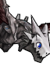
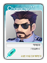
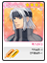
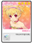
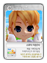
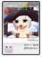
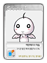
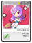

| ID | | Nome | Image | Description |
|---|
| 1 | 268435584 | ゴールデンハンマーセット | | This club set is a heavy hitter. It shines as well as it hits. |
| 2 | 1879113856 | クリムゾンリング | | It can be obtained only through Gacha.
Club Distance will increase by 4 yards (except PT and no Control stat penalty)
If you equip this item with Scarlet Ring, Club Distance will increase 2 yards more (except PT and no Control stat penalty)
Cannot be trad |
| 3 | 606076928 | 海水浴セット（ケン） | | This package includes: Greenline Piranha, Greenline Flip-flops, Zigzag Sportband and Nuri |
| 4 | 606085120 | 海水浴セット（エリカ） |  | This package includes: Orange Sprite Bikini, Sea Sprite Sandals, Aloha Pin, and Hana |
| 5 | 606117891 | 海水浴セット（クー） | | Beach time! Head out to the beach in this adorable ensemble and get noticed! |
| 6 | 606093314 | 海水浴セット（ダイスケ） | | 絡み合ったデザインがかっこいいブレスレットです。 |
| 7 | 606101506 | 海水浴セット（セシリア） | | This package includes: Halo One-piece, Solstice Sandals, Malibu Shades, and Cecilia. |
| 8 | 606109698 | 海水浴セット（マックス） | | This package includes: Big Island Beachwear, Retro Flip-flops, Casino Royale, and Max |
| 9 | 606126082 | 海水浴セット（アリン） | | This package includes: Violet Breeze Swimsuit, Breeze Sandals, Divine Feminine Bloom and Arin. |
| 10 | 268435464 | ピコピコハンマーセット | | These silly-looking clubs deliver serious swings! |
| 11 | 1073741829 | アンダーソン | | 謎のウサギを背に乗せたハト。ティーショット時、ネームプレートをもってプレイヤーの周りを飛びまわります。
- トレジャーポイントの取得量が増加します。
- イベントでのカップイン時のアイテムドロップ率が20%アップします。
- マスコットボーナスが付与されます。（マスコットボーナスはマスコットのLvが上がるごとに増加します）
- ネームプレートにコメントを表示することができます。（全角8文字まで）
- コメント入力時、手数料として1,000 PPを消費します。 |
| 12 | 134219790 | 天使のショウメイ（ケン） | | 神聖なる天使の頭上にある輪に似ているアイテム。
あなたの足元をしっかり照らします。（50W 相当）
ウィングトロース社は快適なあかり空間をご提供いたします！ |
| 13 | 134481943 | 天使のショウメイ（エリカ） | | 神聖なる天使の頭上にある輪に似ているアイテム。
あなたの足元をしっかり照らします。（50W 相当）
ウィングトロース社は快適なあかり空間をご提供いたします！ |
| 14 | 134744075 | 天使のショウメイ（ダイスケ） | | 神聖なる天使の頭上にある輪に似ているアイテム。
あなたの足元をしっかり照らします。（50W 相当）
ウィングトロース社は快適なあかり空間をご提供いたします！ |
| 15 | 135790603 | 天使のショウメイ（アリン） | | 神聖なる天使の頭上にある輪に似ているアイテム。
あなたの足元をしっかり照らします。（50W 相当）
ウィングトロース社は快適なあかり空間をご提供いたします！ |
| 16 | 135004168 | 天使のショウメイ（セシリア） | | 神聖なる天使の頭上にある輪に似ているアイテム。
あなたの足元をしっかり照らします。（50W 相当）
ウィングトロース社は快適なあかり空間をご提供いたします！ |
| 17 | 135266311 | 天使のショウメイ（マックス） | | 神聖なる天使の頭上にある輪に似ているアイテム。
あなたの足元をしっかり照らします。（50W 相当）
ウィングトロース社は快適なあかり空間をご提供いたします！ |
| 18 | 135528458 | 天使のショウメイ（クー） | | 神聖なる天使の頭上にある輪に似ているアイテム。
あなたの足元をしっかり照らします。（50W 相当）
ウィングトロース社は快適なあかり空間をご提供いたします！ |
| 19 | 606117894 | 着物セット（クー） | | -着物（黒）+レッドストラップサンダル+ツインヘアバンドのパッケージ商品です。
-この商品にキャラクターは付きません。 |
| 20 | 606126086 | 着物セット（アリン） | | -着物(赤)+チェリーサンダル+フラワーブラックリボンのパッケージ商品です。
-この商品にキャラクターは付きません。 |
| 21 | 268435465 | ぱんがさセット | | Brighten up rainy days with rainbows using the Parasol Club Set. |
| 22 | 606076932 | 書生さんセット（ケン） | | -和服（書生風）+烏草履+忍耐はちまきのパッケージ商品です。
-この商品にキャラクターは付きません。 |
| 23 | 606085124 | 下町娘セット（エリカ） | | -華小町+桜下駄+硝子かんざしのパッケージ商品です。
-この商品にキャラクターは付きません。 |
| 24 | 268435468 | まじかる☆ステッキクラブセット | | The Duostar Tribe invited a special guest to design this club set, Cadie. With her mastery of magic and thousands of years of experience, the Magic Wand Set was created specifically to be used by only a select few who can control it. Spreading its mysterious magical powers, this club set will improve your skills dramatically. |
| 25 | 606093318 | 侍セット（ダイスケ） | | -SAMURAIセット。
-着物（侍風）+雪駄（茶）+つけマゲのパッケージ商品です。
-この商品にキャラクターは付きません。 |
| 26 | 606101512 | 芸者セット（セシリア） | | -GEISHAセット。
-着物（杏）+菊下駄+べっ甲かんざしのパッケージ商品です。
-この商品にキャラクターは付きません。 |
| 27 | 606109703 | 忍者セット（マックス） | | -NINJAセット。
-忍装束+忍脚絆+忍マスク+忍手甲のパッケージ商品です。
-この商品にキャラクターは付きません。 |
| 28 | 268435466 | エアーナイトⅢセット | | You've got the Air Knight 3, with more power than the last and a sharp new look. Enjoy more power with this improved set. |
| 29 | 606076935 | ドルフィンセット（ケン） | | -ドルフィンスイムパンツ+ドルフィンストライプサンダル+ふしぎな目隠し（ケン）のパッケージ商品です。
-この商品にキャラクターは付きません。 |
| 30 | 606085127 | コスモブルーセット（エリカ） | | -コスモブルースイムウェア+ホワイトストラップサンダル+ふしぎな目隠し（エリカ）のパッケージ商品です。
-この商品にキャラクターは付きません。 |
| 31 | 606117900 | レッドカラーズセット（クー） | | -カラフルラインタンキニ+レッドラインサンダル+ふしぎな目隠し（クー）のパッケージ商品です。
-この商品にキャラクターは付きません。 |
| 32 | 606093320 | ダイバーズウェアセット（ダイスケ） | | -ダイバーズウェア+ダイバーズサンダル+ふしぎな目隠し（ダイスケ）のパッケージ商品です。
-この商品にキャラクターは付きません。 |
| 33 | 606101513 | エレガンスセット（セシリア） | | -エレガンススイムウェア+エレガンスサンダル+ふしぎな目隠し（セシリア）のパッケージ商品です。
-この商品にキャラクターは付きません。 |
| 34 | 606109705 | マリナセット（マックス） | | -マリナサーフパンツ+マリナビーチサンダル+ふしぎな目隠し（マックス）のパッケージ商品です。
-この商品にキャラクターは付きません。 |
| 35 | 606126093 | アリーナセット（アリン） | | -アリーナスイムウェア+アリーナサンダル+ふしぎな目隠し（アリン）のパッケージ商品です。
-この商品にキャラクターは付きません。 |
| 36 | 606085128 | おやすみ子ひつじさんセット（エリカ） | | |
| 37 | 606117901 | ぐっすりペン太くんセット（クー） | | -ペン太くんフードトレーナー+ペン太くんショートブーツ+ペン太くんてぶくろのパッケージ商品です。
-この商品にキャラクターは付きません。 |
| 38 | 606126095 | チョコひつじさんセット（アリン） | | 火先をモチーフにした裾が特徴の丈が短いスカートです。 |
| 39 | 606126094 | ミルキィひつじさんセット（アリン） | | -ミルキィひつじさんぱじゃま+ミルキィひつじさんスリッパ+ミルキィひつじさんキャップのパッケージ商品です。
-この商品にキャラクターは付きません。 |
| 40 | 608182281 | ファンシーフリルドレスセット | | Scratchy Card Exclusive. |
| 41 | 608198667 | フローラドレスセット | | ノリノリのチューンを感じられるヘッドバンド。
装備するとカーブが+2されます。 |
| 42 | 608215055 | フェアリードレスセット | | Scratchy Card Exclusive. |
| 43 | 608223248 | ホワイトピュアドレスセット | | アイテムのメンバー「フレンダ」のヘアスタイル。
ロングヘアーが特徴的。
（C）KK/MF/AMW/P-R S |
| 44 | 608182284 | キューティー☆まじかるセット（エリカ） | | Arin isn't the only one that likes a little magic on Pangya Island! Dress like a cute magician with Hana's Black Twinkle Magical Set! |
| 45 | 608198670 | 魔女っ娘セット（セシリア） | | Scratchy exclusive! Cecilia is getting magical and is going to cast a spell on you! |
| 46 | 608215058 | 魔法少女セット（クー） | | This is a Scratchy Card exclusive item set. |
| 47 | 608223252 | まじかるエンジェルセット（アリン） | | A scratchy exclusive! |
| 48 | 608174091 | シルビアフォースセット(ケン) | | This set is a scratchy exclusive! |
| 49 | 608182287 | シルビアフォースセット(エリカ) | | This set is a scratchy exclusive! |
| 50 | 608206862 | シルビアフォースセット(マックス) | | Scratchy exclusive! Dress up like a member of the elite SSAF. |
| 51 | 608223255 | シルビアフォースセット(アリン) | | Scratchy Exclusive! Dress up like a member of the elite SSAF! |
| 52 | 608190476 | シルビアフォースセット(ダイスケ) | | Scratchy exclusive! Dress up like a member of the elite SSAF. |
| 53 | 608198675 | シルビアフォースセット(セシリア) | | This set is a scratchy exclusive! |
| 54 | 608215062 | シルビアフォースセット(クー) | | Scratchy Exclusive! Dress up like a member of the elite SSAF! |
| 55 | 608231433 | シルビアフォースセット(カズ) | | This set is a scratchy exclusive! |
| 56 | 1879113737 | スターキャットリング | | Receive a Power Gauge bonus when you play pangya while wearing this ring. |
| 57 | 469762060 | BIGポンタ | | Big Papel increases the bonus Pang for Tee Shot. This Papel is designed for serious shoppers. |
| 58 | 134359040 | 妖精の耳（ケン） | | This is a Scratchy Card exclusive item. They were designed after the Elf Pixie of Pangya Island. These Elfen Ears have magical powers to harness the wind around them. Your chance of hitting Pangya is increased in high winds. |
| 59 | 134621184 | 妖精の耳（エリカ） | | This is a Scartchy Card exclusive item. They were designed after the Elf Pixie of Pangya Island. These Elfen Ears have magical powers to harness the wind around them. Your chance of hitting Pangya is increased in high winds. |
| 60 | 134899712 | 妖精の耳（ダイスケ) | | This is a Scartchy Card exclusive item. They were designed after the Elf Pixie of Pangya Island. These Elfen Ears have magical powers to harness the wind around them. Your chance of hitting Pangya is increased in high winds. |
| 61 | 135145472 | 妖精の耳（セシリア） | | This is a Scartchy Card exclusive item. They were designed after the Elf Pixie of Pangya Island. These Elfen Ears have magical powers to harness the wind around them. Your chance of hitting Pangya is increased in high winds. |
| 62 | 135432192 | 妖精の耳（マックス） | | This is a Scratchy Card exclusive. It was designed after the ears of the Elf Pixie on Pangya Island. These Elfen Ears have magical powers to harness the wind around them. Your chance of hitting Pangya is increased in high winds. |
| 63 | 135702528 | 妖精の耳（クー） | | This is a Scartchy Card exclusive item. They were designed after the Elf Pixie of Pangya Island. These Elfen Ears have magical powers to harness the wind around them. Your chance of hitting Pangya is increased in high winds. |
| 64 | 135923712 | 妖精の耳（アリン） | | This is a Scartchy Card exclusive item. They were designed after the Elf Pixie of Pangya Island. These Elfen Ears have magical powers to harness the wind around them. Your chance of hitting Pangya is increased in high winds. |
| 65 | 136210432 | 妖精の耳（カズ） | | This is a Scratchy Card exclusive item. They were designed after the Elf Pixie of Pangya Island. These Elfen Ears have magical powers to harness the wind around them. Your chance of hitting Pangya is increased in high winds. |
| 66 | 608182291 | アップルホワイトセット（エリカ） | | （C)'76,'13 SANRIO CO.,LTD. (E) （C)'09,'13 SANRIOWAVE CO.,LTD. |
| 67 | 608198676 | レモンリーフセット（セシリア） | | This package includes Lemon Leaf Bikini + Lemon Leaf Beach Hat |
| 68 | 608215064 | ブラックテディセット（クー） | | - オランダの国旗が描かれたフェイスペインティング。
可愛いフェイスペインティングには,パンヤ島みんなの想いがこめられています。 |
| 69 | 608223259 | ピュアホワイトセット（アリン） | | とってもかわいいショートヘア。 |
| 70 | 608174092 | おやすみセット（ケン） | | |
| 71 | 608182293 | おやすみセット（エリカ） | | ピンクナイトキャップ+ピンクコットンネグリジェ+うさちゃんピンクスリッパのパッケージセットです。この商品にキャラクターは付きません。 |
| 72 | 608206864 | おやすみセット（マックス） | | おもしろアイマスク+ひつじさんナイトシャツ+ひつじさんズボン+フォレストスリッパのパッケージセットです。この商品にキャラクターは付きません。 |
| 73 | 608223261 | おやすみセット（アリン） | | モーモーナイトキャップ+モーモーナイトシャツ+モーモースリッパのパッケージセットです。この商品にキャラクターは付きません。 |
| 74 | 608190477 | おやすみセット（ダイスケ） | | グリズリーパジャマ+グリズリーズボン+グリズリーフットのパッケージセットです。
この商品にキャラクターは付きません。 |
| 75 | 608198678 | おやすみセット（セシリア） | | おやすみYシャツ+ピュアレースリボンハイヒールのパッケージセットです。
この商品にキャラクターは付きません。 |
| 76 | 608215066 | おやすみセット（クー） | | パンダドルフナイトキャップ+パンダドルフロングシャツ+スターライトスリッパのパッケージセットです。
この商品にキャラクターは付きません。 |
| 77 | 608231434 | おやすみセット（カズ） | | ミニテディナイトキャップ+ミニテディパジャマ+ミニテディズボン+ミニテディスリッパのパッケージセットです。
この商品にキャラクターは付きません。 |
| 78 | 608223262 | Yシャツセット（アリン） | | 大きなYシャツ+クリアホワイトスリッパのパッケージセットです。
この商品にキャラクターは付きません。 |
| 79 | 608182294 | なりきりキャットセット（エリカ） | | This kitty outfit is cool and cute! Dress up like a mischievous kitten and frolic on the links! |
| 80 | 608198679 | ロシアンブルーセット（セシリア） | | This kitty outfit is cool and cute! Dress up like a mischievous kitten and frolic on the links! |
| 81 | 608215067 | クロにゃんこセット（クー） | | This kitty outfit is cool and cute! Dress up like a mischievous kitten and frolic on the links! |
| 82 | 608223263 | みるくにゃんこセット（アリン） | | This kitty outfit is cool and cute! Dress up like a mischievous kitten and frolic on the links! |
| 83 | 1879113739 | ミスティックリング | | This ring increases your power gauge even when you make a powershot. |
| 84 | 608174094 | モンクセット（ケン） | | |
| 85 | 608182296 | クレリックセット（エリカ） | | モフモフした毛とプニプニした肉球が気持ちよさそうな、キツネさんの足。 |
| 86 | 608206865 | アーチャーセット（マックス） | | ガスなどから身を守るために作られた特製の防護マスク。
- トレジャーポイントの取得量が増加します。
- イベントでのカップイン時のアイテムドロップ率が20％アップします。 |
| 87 | 608223264 | ヴァルキリーセット（アリン） | | ラブラブな新婚生活気分を味わうことができるヘアーです。 |
| 88 | 608190478 | ウォリアーセット（ダイスケ） | | This is a Gacha Exclusive item. |
| 89 | 608198680 | シーフセット（セシリア） | | This is a Gacha Exclusive item. |
| 90 | 608215069 | ウィザードセット（クー） | | This is a Gacha Exclusive item. |
| 91 | 608231435 | ナイトセット（カズ） | | This is a Gacha Exclusive item. |
| 92 | 608182298 | ゴシックセット（エリカ） | | A scratchy exclusive item |
| 93 | 608198681 | ゴシックセット（セシリア） | | Scratchy Card Exclusive. |
| 94 | 608215070 | ゴシックセット（クー） | | Scratchy Card Exclusive. |
| 95 | 608223267 | ゴシックセット（アリン） | | A scratchy exclusive item |
| 96 | 608182299 | カタリナセット（エリカ） | | Hana's dropping her quiet demeanor and taking a walk on the wild side! While usually sweet and kind, when she puts on this outfit she turns into a bloodthirsty pirate ready to loot and pillage! |
| 97 | 608198682 | ルビルダセット（セシリア） | | Cecilia is no stranger to navigation, but now she's reading treasure maps and turning the wheel of a proper pirate ship! |
| 98 | 608215071 | マリーセット（クー） | | Pirate Queen isn't just an outfit, it's Kooh's way of life! This is a formal outfit for Kooh and one she would wear while captaining her own pirate ships into battle! |
| 99 | 608223268 | アンネセット（アリン） | | Arin looks lovely and formal in her commodore's garb. She's going to whip her fleet of pirates into a sensible order and terrify the seas! |
| 100 | 608174095 | ラクアムセット（ケン） | | Nuri is ready to set out on an adventure as a privateer. He'll be ready to sail the seas and fend off pirates in this outfit! |
| 101 | 608190479 | ドワーセット（ダイスケ） | | Azer's calm and elegant demeanor makes him a perfect candidate for Pirate King of the year! But don't let his looks fool you, he'll keelhaul you as soon as look at you! |
| 102 | 608206867 | ジェイムセット（マックス） | | Ever one to love the classics, Max is rocking a Jolly Roger motif and is ready to set sail! |
| 103 | 608231436 | バルバセット（カズ） | | As befitting a prince of the Roo Tribe, Kaz is taking on formal dress to make sure his presence commands the respect he deserves! |
| 104 | 134309893 | 妖精の羽（ケン） | | This is a Gacha Exclusive item. The magic in the Fairy Wings will widen the Pangya Impact Zone. |
| 105 | 134580229 | 妖精の羽（エリカ） | | This is a Gacha Exclusive item. The magic in the Fairy Wings will widen the Pangya Impact Zone. |
| 106 | 134842373 | 妖精の羽（ダイスケ） | | This is a Gacha Exclusive item. The magic in the Fairy Wings will widen the Pangya Impact Zone. |
| 107 | 135120901 | 妖精の羽（セシリア） | | This is a Gacha Exclusive item. The magic in the Fairy Wings will widen the Pangya Impact Zone. |
| 108 | 135366661 | 妖精の羽（マックス） | | This is a Gacha Exclusive item. The magic in the Fairy Wings will widen the Pangya Impact Zone. |
| 109 | 135661573 | 妖精の羽（クー） | | This is a Gacha Exclusive item. The magic in the Fairy Wings will widen the Pangya Impact Zone. |
| 110 | 135858181 | 妖精の羽（アリン） | | This is a Gacha Exclusive item. The magic in the Fairy Wings will widen the Pangya Impact Zone. |
| 111 | 136194053 | 妖精の羽（カズ） | | This is a Gacha Exclusive item. The magic in the Fairy Wings will widen the Pangya Impact Zone. |
| 112 | 608182301 | ジェリーボーダセット（エリカ） | | ジェリーボーダービキニ+サンフロートヘアバンド+サンボーダーバングル+サンボーダーアンクレットのセットアイテムです。
このセットにキャラクターは含まれません。 |
| 113 | 608198683 | スターナイトセット（セシリア） | | スターナイトネックビキニ+ブラックゴールドバングル+サマーブルーサングラス+レッドソールリボンサンダル+サマーナイトリボンのセットアイテムです。
このセットにキャラクターは含まれません。 |
| 114 | 608215073 | シェルピンクセット（クー） | | シェルピンクビキニ+シェルピンクバタフライ+パープルビーチサンダルのセットアイテムです。
このセットにキャラクターは含まれません。 |
| 115 | 608223269 | シースルーセット（アリン） | | シースルーブルービキニ+レモンイエローヘアピン+ラピスラズリアンクレットのセットアイテムです。
このセットにキャラクターは含まれません。 |
| 116 | 608215074 | お風呂セット（クー） | | -コートジボワールの国旗が描かれたフェイスペインティング。
-可愛いフェイスペインティングにはパンヤ島みんなの想いがこめられています。 |
| 117 | 608174097 | パンヤリーグセット（ケン） | | This special Baseball Set includes Cap, Jersey, Pants, & Cleats. |
| 118 | 608182302 | スカイライトセット（エリカ） | | A scratchy exclusive item |
| 119 | 608215075 | ビジョナリーセット（クー） | | A scratchy exclusive item |
| 120 | 608223270 | ライディングセット（アリン） | | This special Equestrian Set includes Riding Hat, Riding Gloves, Riding Top, & Riding Pants. |
| 121 | 608182304 | サファルセット（エリカ） | | Scratchy Card Exclusive. |
| 122 | 608198684 | ラビーセット（セシリア） | | Scratchy Card Exclusive. |
| 123 | 608215079 | ジュマーセット（クー） | | Scratchy Card Exclusive. |
| 124 | 608223272 | ラジャブセット（アリン） | | Scratchy Card Exclusive. |
| 125 | 608239627 | ラマダセット（ルーシア） | | Scratchy Card Exclusive. |
| 126 | 136456192 | 妖精の耳(ルーシア) | | This is a Scratchy Card exclusive. It was designed after the ears of the Elf Pixie on Pangya Island. These Elfen Ears have magical powers to harness the wind around them. Your chance of hitting Pangya is increased in high winds. |
| 127 | 608182306 | ウィッチセット（エリカ） | | Scratchy Card Exclusive. |
| 128 | 608198686 | ウィッチセット（セシリア） | | Scratchy Card Exclusive. |
| 129 | 608215081 | ウィッチセット（クー） | | Scratchy Card Exclusive. |
| 130 | 608223274 | ウィッチセット（アリン） | | Scratchy Card Exclusive. |
| 131 | 608239630 | ウィッチセット（ルーシア） | | ウィッチドレス（ルーシア）+ウィッチブーツ（ルーシア）+ウィッチハット（ルーシア）+ウィッチグラブ（ルーシア）のセットアイテムです。
このセットにキャラクターは含まれません。 |
| 132 | 134758454 | ハロウィンゴーストスーツ |  | Scratchy Card Exclusive. |
| 133 | 1879113744 | ハイブリッドリング | | This ring adds + 2 yards to your drive (except for putter). This ring also increases your Pangya Gauge for each hole. |
| 134 | 608239620 | ローズウェディングセット（ルーシア） | | 古代の人が着ていたとされる衣。勾玉が特徴的です。 |
| 135 | 608174102 | スノーフラワーセット（ケン） | | |
| 136 | 608182310 | スノーフラワーセット（エリカ） | | 活発な印象を与えるピンクのサンダルです。 |
| 137 | 608206870 | スノーフラワーセット（マックス） | | 機械仕掛けの眼帯です。蒸気機関の香りがします。 |
| 138 | 608231444 | スノーフラワーセット（カズ） | | |
| 139 | 608239633 | スノーフラワーセット（ルーシア） | | シルビア特殊機甲部隊(Silvia special armored force)が使用しているグローブ
ダークですっきりとした仕上がりになっている。 |
| 140 | 608190485 | スノーフラワーセット（ダイスケ） | | This is a Gacha Exclusive item. |
| 141 | 608198691 | スノーフラワーセット（セシリア） | | This is a Gacha Exclusive item. |
| 142 | 608215087 | スノーフラワーセット（クー） | | This is a Gacha Exclusive item. |
| 143 | 608223281 | スノーフラワーセット（アリン） | | This is a Gacha Exclusive item. |
| 144 | 608231446 | 浪士セット | | 桜紋羽織袴+鉢巻（黒）+雪駄（黒）のセットアイテムです。
このセットにキャラクターは含まれません。 |
| 145 | 608239634 | 大正着物セット | | 着物（桜）+大正桜リボン+桜草履のセットアイテムです。
このセットにキャラクターは含まれません。 |
| 146 | 608239621 | おやすみセット（ルーシア） | | ラブリーナイトキャップ+ラブリーナイトシャツ+ラブリーナイトスリッパのセットアイテムです。
このセットにキャラクターは含まれません。 |
| 147 | 608182312 | ナースセット（エリカ） | | This won`t sting a bit! Dress up like a Nurse of Pangya Island General Hospital and hit the links! |
| 148 | 608198692 | ナースセット（セシリア） | | This won`t sting a bit! Dress up like a Nurse of Pangya Island General Hospital and hit the links! |
| 149 | 608215088 | ナースセット（クー） | | This won`t sting a bit! Dress up like a Nurse of Pangya Island General Hospital and hit the links! |
| 150 | 608223282 | ナースセット（アリン） | | This won`t sting a bit! Dress up like a Nurse of Pangya Island General Hospital and hit the links! |
| 151 | 608239635 | ナースセット（ルーシア） | | This won`t sting a bit! Dress up like a Nurse of Pangya Island General Hospital and hit the links! |
| 152 | 136398853 | 妖精の羽（ルーシア） | | This is a Gacha Exclusive item. The magic in the Fairy Wings will widen the Pangya Impact Zone. |
| 153 | 608182313 | フラワーセット | | Inspired by a lovely poster of Hana, this Pangya High School uniform is guaranteed to make your Hana look absolutely adorable. |
| 154 | 608198693 | チーフメイトセット | | Inspired by the strikingly beautiful poster of Cecilia, this is the never-before-seen uniform of the elite SSAF's Officers. |
| 155 | 608215089 | キャプテンセット | | Inspired by an adorable poster of Kooh, this uniform shows off the impish nature of Kooh. |
| 156 | 608223283 | マジシャンセット | | Inspired by elegant artwork of Arin, this Magical dress and accessories are perfect for showing off your Arin. |
| 157 | 608239636 | アイドルセット | | Inspired by an alluring poster of Lucia, the Glitter Pop set is Lucia's favorite stage costume. |
| 158 | 608174104 | モノウェイターセット（ケン） | | This package includes all the Punker Waiter items. |
| 159 | 608182314 | モノウェイターセット（エリカ） | | モノウェイタードレス（エリカ）+モノウェイターシューズ（エリカ）+モノウェイターバンド（エリカ）+モノウェイターヘアバンド（エリカ）のセットアイテムです。
このセットにキャラクターは含まれません。 |
| 160 | 608198694 | モノウェイターセット（セシリア） | | モノウェイタードレス（セシリア）+モノウェイターヒール（セシリア）+モノウェイターバンド（セシリア）+モノウェイターヘアバンド（セシリア）のセットアイテムです。
このセットにキャラクターは含まれません。 |
| 161 | 608215090 | モノウェイターセット（クー） | | モノウェイタードレス（クー）+モノウェイターシューズ（クー）+モノウェイターバンド（クー）+モノウェイターヘアバンド（クー）のセットアイテムです。
このセットにキャラクターは含まれません。 |
| 162 | 608231447 | モノウェイターセット（カズ） | | |
| 163 | 608239619 | シルビアフォースセット(ルーシア) | | This set is a scratchy exclusive! |
| 164 | 608190486 | モノウェイターセット（ダイスケ） | | |
| 165 | 608206872 | モノウェイターセット（マックス） | | 機械仕掛けの眼帯です。雰囲気を味わうならバッチリの品です。 |
| 166 | 606126133 | モノウェイターセット（アリン） | | This package includes Punk Rock Waitress(A) + Punk Rock Waitress Long Boots + Punk Rock Kachusha(A). This set is only offered for limited time. Items can be worn even after the sale has ended. |
| 167 | 606142485 | モノウェイターセット（ルーシア） | | |
| 168 | 608182316 | トロピカルサマーセット | | トロピカルサマーシフォンビキニ+トロピカルサマーサンダル+トロピカルサマーストローハットのセットアイテムです。
このセットにキャラクターは含まれません。 |
| 169 | 608190487 | ネオマリンセット | | ネオマリンガード+ネオマリンボーダーパンツ+ネオマリンサンダル+ネオマリンサングラス+コンローネオヘアバンドのセットアイテムです。
このセットにキャラクターは含まれません。 |
| 170 | 608206873 | ホワイトビーチセット | | ホワイトビーチシャツ+ホワイトビーチパンツ+レインボービーチサンダル+ショートポニーテールのセットアイテムです。
このセットにキャラクターは含まれません。 |
| 171 | 608223286 | オレンジドットセット | | オレンジドットラップビキニ+オレンジドットサンダル+ビーチストローハットのセットアイテムです。
このセットにキャラクターは含まれません。 |
| 172 | 608239640 | カラフルドットセット | | カラフルドットラップビキニ+カラフルドットバングル+ピンクブルーヒール+カラフルドットヘアバンドのセットアイテムです。
このセットにキャラクターは含まれません。 |
| 173 | 608174106 | ピンクラインスイムセット | | ピンクラインアームバンド+ピンクラインスイムパンツ+ピンクラインビーチサンダル+ピンクラインメッシュキャップのセットアイテムです。
このセットにキャラクターは含まれません。 |
| 174 | 608198696 | ホワイトレオパルドセット | | ホワイトレオパルドシフォンビキニ+ホワイトレオパルドビーチサンダル+ホワイトレオパルドブレスレット+ホワイトオーバーサングラスのセットアイテムです。
このセットにキャラクターは含まれません。 |
| 175 | 608215092 | カリビアンアクアセット | | カリビアンラップアクアビキニ+カリビアンアクアビーチサンダル+カリビアンアクアヘアバンドのセットアイテムです。
このセットにキャラクターは含まれません。 |
| 176 | 608231450 | ストライプスイムセット | | ストライプレッシガード+ストライプレッシスイムパンツ+グラディアタービーチサンダル+スパイキーテール+ストライプアームバンド+レッドミラーサングラスのセットアイテムです。
このセットにキャラクターは含まれません。 |
| 177 | 134359048 | WT-PEP-100S（ケン） |  | The Wingtross Powered External Pip is a brand new product from Wingtross. With it's patented Magitechnology it improves your mental and physical status as well as giving you a combo boost at the beginning of games. |
| 178 | 134621192 | WT-PEP-100S（エリカ） | | The Wingtross Powered External Pip is a brand new product from Wingtross. With it's patented Magitechnology it improves your mental and physical status as well as giving you a combo boost at the beginning of games. |
| 179 | 134899720 | WT-PEP-100S（ダイスケ） | | The Wingtross Powered External Pip is a brand new product from Wingtross. With it's patented Magitechnology it improves your mental and physical status as well as giving you a combo boost at the beginning of games. |
| 180 | 135145480 | WT-PEP-100S（セシリア） | | The Wingtross Powered External Pip is a brand new product from Wingtross. With it's patented Magitechnology it improves your mental and physical status as well as giving you a combo boost at the beginning of games. |
| 181 | 135432200 | WT-PEP-100S（マックス） | | The Wingtross Powered External Pip is a brand new product from Wingtross. With it's patented Magitechnology it improves your mental and physical status as well as giving you a combo boost at the beginning of games. |
| 182 | 135702536 | WT-PEP-100S（クー） | | The Wingtross Powered External Pip is a brand new product from Wingtross. With it's patented Magitechnology it improves your mental and physical status as well as giving you a combo boost at the beginning of games. |
| 183 | 135923720 | WT-PEP-100S（アリン） | | The Wingtross Powered External Pip is a brand new product from Wingtross. With it's patented Magitechnology it improves your mental and physical status as well as giving you a combo boost at the beginning of games. |
| 184 | 136210440 | WT-PEP-100S（カズ） | | The Wingtross Powered External Pip is a brand new product from Wingtross. With it's patented Magitechnology it improves your mental and physical status as well as giving you a combo boost at the beginning of games. |
| 185 | 136456200 | WT-PEP-100S（ルーシア） | | The Wingtross Powered External Pip is a brand new product from Wingtross. With it's patented Magitechnology it improves your mental and physical status as well as giving you a combo boost at the beginning of games. |
| 186 | 268435495 | ソウルリーパークラブセット | | Originally created for a mysterious hooded figure; this set only seems threatening. In the hands of a skilled player this club set is extremely useful! Don't let the haunted Pangya cry distract you! |
| 187 | 608239618 | ゴシックセット（ルーシア） | | Scratchy Card Exclusive. |
| 188 | 608198699 | ティッキーなりきりセット | | Dress Cecilia up in this lovely Tiki costume. |
| 189 | 608206877 | ドルフなりきりセット | | Is that Dolfini? Or is it Max? You decide! |
| 190 | 608223289 | ミンティなりきりセット | | Arin get's to dress up like a mysterious Mingti; Tiki's twin sister. |
| 191 | 608231453 | キューマなりきりセット | | Now Kaz can look calm and cool just like Quma! |
| 192 | 608239645 | カディエなりきりセット | | Lucia's a witch! Dress Lucia up in this costume so she can be just like Cadie. |
| 193 | 608174110 | ピピンなりきりセット | | Dress Nuri up in this cute Pippin costume! |
| 194 | 608182320 | ロロなりきりセット | | Now Hana can dress just like Lolo! |
| 195 | 608190491 | タンプーなりきりセット | | You can dress Azer up like the big huggable Titan Boo! |
| 196 | 608215097 | すけポンなりきりセット | | Now Kooh can look just like Papel. |
| 197 | 608182322 | バニーコスチュームセット（エリカ） | | |
| 198 | 608198702 | バニーコスチュームセット（セシリア） | | 装備中はパンヤショットが成功しやすくなる特殊効果を得ることができます。
上着、下着、アクセサリー（背中）の部位に該当する装備です。
（C)'76,'13 SANRIO CO.,LTD. (E) （C)'09,'13 SANRIOWAVE CO.,LTD. |
| 199 | 608215099 | バニーコスチュームセット（クー） | | - アルゼンチンの国旗が描かれたフェイスペインティング。
可愛いフェイスペインティングには,パンヤ島みんなの想いがこめられています。 |
| 200 | 608223292 | バニーコスチュームセット（アリン） | | バレンタインにぴったりのヘアリボンです。 |
| 201 | 608239648 | バニーコスチュームセット（ルーシア） | | |
| 202 | 1879113858 | アルティメットリング | | One of many powerful rings. It was forged by an artisan as a study in ring craft. It is impossible to destroy and you feel great power emanating from it. This ring adds 1 slot to all your stats. |
| 203 | 608239642 | ローズナイトセット（ルーシア） | | This is a Gacha Exclusive item. |
| 204 | 606117950 | アイドル衣装セット（クー） | | ProjectGヘッドセット+ProjectGユニフォーム+ProjectGシューズ+ProjectGグローブのセットアイテムです。
このセットにキャラクターは含まれません。 |
| 205 | 608182324 | アイドル衣装セット（エリカ） | | - ｺｻ ｼｼﾆｮｴﾂ ｽｺﾅｩｷ｡ﾄ｡ﾄｫｵ蟾ﾎｸｸ ｱｸﾇﾒ ｼ・ﾀﾖｴﾂ ﾈﾍﾇﾑ ｾﾆﾀﾌﾅﾛﾀﾔｴﾏｴﾙ. |
| 206 | 608198704 | アイドル衣装セット（セシリア） | | Scratchy Card Exclusive |
| 207 | 608223294 | アイドル衣装セット（アリン） | | Scratchy Card Exclusive |
| 208 | 608239650 | アイドル衣装セット（ルーシア） | | A scratchy exclusive item |
| 209 | 608182325 | アリス衣装セット(エリカ） | | Hana's got a fairy tale wonderland in her future and she wants to make sure she's dressed up properly for it! |
| 210 | 608198705 | 雪の女王衣装セット(セシリア） | | Cecilia's got a fairy tale wonderland in her future and she wants to make sure she's dressed up properly for it! |
| 211 | 608215104 | 赤ずきん衣装セット(クー） | | Kooh's got a fairy tale wonderland in her future and she wants to make sure she's dressed up properly for it! |
| 212 | 608223295 | 白雪姫衣装セット(アリン） | | Arin's got a fairy tale wonderland in her future and she wants to make sure she's dressed up properly for it! |
| 213 | 608239651 | 白鳥の湖衣装セット(ルーシア） | | Lucia's got a fairy tale wonderland in her future and she wants to make sure she's dressed up properly for it! |
| 214 | 134252566 | パワーエンブレムレッド（ケン） |  | These gloves have been enchanted with the magic of Ancient Dragons. Players can have up to 4 slots of power gauge when wearing this special set of gloves. |
| 215 | 134506530 | パワーエンブレムレッド（エリカ） | | These gloves have been enchanted with the magic of Ancient Dragons. Players can have up to 4 slots of power gauge when wearing this special set of gloves. |
| 216 | 134776854 | パワーエンブレムレッド（ダイスケ） | | These gloves have been enchanted with the magic of Ancient Dragons. Players can have up to 4 slots of power gauge when wearing this special set of gloves. |
| 217 | 135036967 | パワーエンブレムレッド（セシリア） | | These gloves have been enchanted with the magic of Ancient Dragons. Players can have up to 4 slots of power gauge when wearing this special set of gloves. |
| 218 | 135290905 | パワーエンブレムレッド（マックス） | | These gloves have been enchanted with the magic of Ancient Dragons. Players can have up to 4 slots of power gauge when wearing this special set of gloves. |
| 219 | 135561253 | パワーエンブレムレッド（クー） | | These gloves have been enchanted with the magic of Ancient Dragons. Players can have up to 4 slots of power gauge when wearing this special set of gloves. |
| 220 | 135815197 | パワーエンブレムレッド（アリン） | | These gloves have been enchanted with the magic of Ancient Dragons. Players can have up to 4 slots of power gauge when wearing this special set of gloves. |
| 221 | 136085530 | パワーエンブレムレッド（カズ） | | These gloves have been enchanted with the magic of Ancient Dragons. Players can have up to 4 slots of power gauge when wearing this special set of gloves. |
| 222 | 136347686 | パワーエンブレムレッド（ルーシア） | | These gloves have been enchanted with the magic of Ancient Dragons. Players can have up to 4 slots of power gauge when wearing this special set of gloves. |
| 223 | 608182326 | ブラックウェディングセット（エリカ） | | All dressed in black and deadly as sin, Hana's not going to let you off easily if you cross her! |
| 224 | 608198706 | ブラックウェディングセット（セシリア） | | All dressed in black and deadly as sin, Cecilia's not going to let you off easily if you cross her! |
| 225 | 608215105 | ブラックウェディングセット（クー） | | All dressed in black and deadly as sin, Kooh's not going to let you off easily if you cross her! |
| 226 | 608223296 | ブラックウェディングセット（アリン） | | All dressed in black and deadly as sin, Arin's not going to let you off easily if you cross her! |
| 227 | 608239652 | ブラックウェディングセット（ルーシア） | | All dressed in black and deadly as sin, Lucia's not going to let you off easily if you cross her! |
| 228 | 608182327 | お風呂セット（エリカ） | | Gacha Exclusive Item. It's time to hit the spa and unwind after a long day! |
| 229 | 608198707 | お風呂セット（セシリア） | | Gacha Exclusive Item. It's time to hit the spa and unwind after a long day! |
| 230 | 608215106 | 温泉ゆかたセット（クー） | | Gacha Exclusive Item. It's time to hit the spa and unwind after a long day! |
| 231 | 608223297 | お風呂セット（アリン） | | Gacha Exclusive Item. It's time to hit the spa and unwind after a long day! |
| 232 | 608239653 | お風呂セット（ルーシア） | | Gacha Exclusive Item. It's time to hit the spa and unwind after a long day! |
| 233 | 608182328 | ピンクストロベリーセット（エリカ） | | This is a Gacha Exclusive Item |
| 234 | 608198708 | ゴールドストライプセット（セシリア） | | This is a Gacha Exclusive Item |
| 235 | 608215107 | シースルーバンブーセット（クー） | | This is a Gacha Exclusive Item |
| 236 | 608223298 | リングチャームセット（アリン） | | This is a Gacha Exclusive Item |
| 237 | 608239654 | ピンクフラワーセット（ルーシア） | | This is a Gacha Exclusive Item |
| 238 | 606150660 | 白スクセット（ネル） | | ストライプラインシュシュ＋白スク（ネル）＋スクールビーチサンダルです。
このセットにキャラクターは含まれません。 |
| 239 | 135807133 | スクール水着（アリン） |  | ウィズ魔法学校のスクール水着。 |
| 240 | 134309891 | ニンフの羽（ケン） | | This is a Gacha Exclusive item. The magic in the Nymph Wings will widen the Pangya Impact Zone. |
| 241 | 134580227 | ニンフの羽（エリカ） | | This is a Gacha Exclusive item. The magic in the Nymph Wings will widen the Pangya Impact Zone. |
| 242 | 134842371 | ニンフの羽（ダイスケ） | | This is a Gacha Exclusive item. The magic in the Nymph Wings will widen the Pangya Impact Zone. |
| 243 | 135120899 | ニンフの羽（セシリア） | | This is a Gacha Exclusive item. The magic in the Nymph Wings will widen the Pangya Impact Zone. |
| 244 | 135366659 | ニンフの羽（マックス） | | This is a Gacha Exclusive item. The magic in the Nymph Wings will widen the Pangya Impact Zone. |
| 245 | 135661571 | ニンフの羽（クー） | | This is a Gacha Exclusive item. The magic in the Nymph Wings will widen the Pangya Impact Zone. |
| 246 | 135858179 | ニンフの羽（アリン） | | This is a Gacha Exclusive item. The magic in the Nymph Wings will widen the Pangya Impact Zone. |
| 247 | 136194055 | ニンフの羽（カズ） | | This is a Gacha Exclusive item. The magic in the Nymph Wings will widen the Pangya Impact Zone. |
| 248 | 136398855 | ニンフの羽（ルーシア） | | This is a Gacha Exclusive item. The magic in the Nymph Wings will widen the Pangya Impact Zone. |
| 249 | 136660996 | ニンフの羽（ネル） | | This is a Gacha Exclusive item. The magic in the Nymph Wings will widen the Pangya Impact Zone. |
| 250 | 608190494 | フランケンセット（ダイスケ） | | Azer wants to dress up like Frankenstein's Monster for Halloween! This set will have Azer lurching and grunting all over Pangya Island. |
| 251 | 608206881 | ダークロードシックセット（マックス） | | Always the serious one, Kaz is donning the garb of a Dread Prince! Matched with Soul Reaper clubs you'll look like a prince straight out of Deep Inferno! |
| 252 | 608215108 | キョンシーセット（クー） | | Boo! Dress up Kooh as a traditional Chinese ghost: Jiang Shi! |
| 253 | 608239655 | サキュバスセット（ルーシア） | | Watch out men, Lucia is on the prowl! |
| 254 | 608247813 | カースドペッパーセット（ネル） | | |
| 255 | 608182329 | G☆Zebra セット（エリカ） | | Are you ready to Jam? You better be! Rock out with Hana in this Gacha exclusive now! |
| 256 | 608215109 | G☆Square セット（クー） | | Are you ready to Jam? You better be! Rock out with Kooh in this Gacha exclusive now! |
| 257 | 608223299 | G☆Check セット（アリン） | | Are you ready to Jam? You better be! Rock out with Arin in this Gacha exclusive now! |
| 258 | 608239656 | G☆Butterfly セット（ルーシア） | | Are you ready to Jam? You better be! Rock out with Lucia in this Gacha exclusive now! |
| 259 | 608247814 | G☆Bunny セット（ネル） | | Are you ready to Jam? You better be! Rock out with Nell in this Gacha exclusive now! |
| 260 | 608215111 | ナタリーセット(クー) | | - ｺｻ ｼｼﾆｮｴﾂ ｽｺﾅｩｷ｡ﾄ｡ﾄｫｵ蟾ﾎｸｸ ｱｸﾇﾒ ｼ・ﾀﾖｴﾂ ﾈﾍﾇﾑ ｾﾆﾀﾌﾅﾛﾀﾔｴﾏｴﾙ. |
| 261 | 608223301 | モニカセット(アリン) | | - ｺｻ ｼｼﾆｮｴﾂ ｽｺﾅｩｷ｡ﾄ｡ﾄｫｵ蟾ﾎｸｸ ｱｸﾇﾒ ｼ・ﾀﾖｴﾂ ﾈﾍﾇﾑ ｾﾆﾀﾌﾅﾛﾀﾔｴﾏｴﾙ. |
| 262 | 608239658 | ヴァレリーセット（ルーシア） | | - ｺｻ ｼｼﾆｮｴﾂ ｽｺﾅｩｷ｡ﾄ｡ﾄｫｵ蟾ﾎｸｸ ｱｸﾇﾒ ｼ・ﾀﾖｴﾂ ﾈﾍﾇﾑ ｾﾆﾀﾌﾅﾛﾀﾔｴﾏｴﾙ. |
| 263 | 608247816 | フルールセット(ネル) | | - ｺｻ ｼｼﾆｮｴﾂ ｽｺﾅｩｷ｡ﾄ｡ﾄｫｵ蟾ﾎｸｸ ｱｸﾇﾒ ｼ・ﾀﾖｴﾂ ﾈﾍﾇﾑ ｾﾆﾀﾌﾅﾛﾀﾔｴﾏｴﾙ. |
| 264 | 1879113746 | オービタルリング | | This Ring increases your combo gauge after each hole. This Ring also increases your Pangya Impact Zone at mild winds. |
| 265 | 608174122 | 和装セット | | |
| 266 | 608239660 | 巫女セット | | 大きなハートがあしらわれた不思議な能力が発動するナックル。
-（ノーマルサーバー時）一定確率で、風速を1mにする。
-（ナチュラルサーバー時）一定確率で、風速を1.0m～1.9mのいずれかにする。 |
| 267 | 608182330 | アトミックセット(エリカ) | | - This is a Gacha Exclusive Item |
| 268 | 608198709 | アトミックセット(セシリア) | | - This is a Gacha Exclusive Item |
| 269 | 608215112 | アトミックセット(クー) | | - This is a Gacha Exclusive Item |
| 270 | 608223302 | アトミックセット(アリン) | | - This is a Gacha Exclusive Item |
| 271 | 608239661 | アトミックセット(ルーシア) | | - This is a Gacha Exclusive Item |
| 272 | 136660997 | イグニッションブースター(ネル) | | This is a Gacha Exclusive Item. These wings will increase your Pangya Impact Zone |
| 273 | 608182331 | ディーラーセット(エリカ) | | ラブラブな新婚生活気分を味わうことができるミュールです。 |
| 274 | 608198710 | ディーラーセット(セシリア) | | フェニックスをイメージした炎のように輝く翼。
装備中はパンヤショットが成功しやすくなる特殊効果を得ることができます。
ホール開始時にパンヤコンボゲージが+4増加します。 |
| 275 | 608215113 | ディーラーセット(クー) | | 後ろで髪の毛を束ねて、お姉さんに見せることができるヘアカット
これにメガネをかけるとデキる女性に変身 |
| 276 | 608223303 | ディーラーセット(アリン) | | パンヤ島の巨樹古木に集まると言われているエルフの耳をかたどったもの。装備中は風速によってパンヤショットが成功しやすくなる特殊効果を得ることができ、アイテムを使用しても恩恵をうけることができます。 |
| 277 | 608239662 | ディーラーセット(ルーシア) | | 民族的な模様のタトゥー。
パワーゲージが通常3ゲージのところ、4ゲージまで使えるようになります。 |
| 278 | 268435494 | ルビーエアーナイト | | This Club Set was crafted using the finest Abbot Gems on Pangya Island. A Gacha Exclusive. |
| 279 | 608174123 | りべらようちえんせっと(ケン) | | - ｺｻ ｼｼﾆｮｴﾂ ｽｺﾅｩｷ｡ﾄ｡ﾄｫｵ蟾ﾎｸｸ ｱｸﾇﾒ ｼ・ﾀﾖｴﾂ ﾈﾍﾇﾑ ｾﾆﾀﾌﾅﾛﾀﾔｴﾏｴﾙ. |
| 280 | 608182333 | りべらようちえんせっと(エリカ) | | - ｺｻ ｼｼﾆｮｴﾂ ｽｺﾅｩｷ｡ﾄ｡ﾄｫｵ蟾ﾎｸｸ ｱｸﾇﾒ ｼ・ﾀﾖｴﾂ ﾈﾍﾇﾑ ｾﾆﾀﾌﾅﾛﾀﾔｴﾏｴﾙ. |
| 281 | 608215115 | りべらようちえんせっと(クー) | | - ｺｻ ｼｼﾆｮｴﾂ ｽｺﾅｩｷ｡ﾄ｡ﾄｫｵ蟾ﾎｸｸ ｱｸﾇﾒ ｼ・ﾀﾖｴﾂ ﾈﾍﾇﾑ ｾﾆﾀﾌﾅﾛﾀﾔｴﾏｴﾙ. |
| 282 | 608239664 | りべらようちえんせっと(ルーシア) | | - ｺｻ ｼｼﾆｮｴﾂ ｽｺﾅｩｷ｡ﾄ｡ﾄｫｵ蟾ﾎｸｸ ｱｸﾇﾒ ｼ・ﾀﾖｴﾂ ﾈﾍﾇﾑ ｾﾆﾀﾌﾅﾛﾀﾔｴﾏｴﾙ. |
| 283 | 608247820 | りべらようちえんせっと(ネル) | | - ｺｻ ｼｼﾆｮｴﾂ ｽｺﾅｩｷ｡ﾄ｡ﾄｫｵ蟾ﾎｸｸ ｱｸﾇﾒ ｼ・ﾀﾖｴﾂ ﾈﾍﾇﾑ ｾﾆﾀﾌﾅﾛﾀﾔｴﾏｴﾙ. |
| 284 | 134252569 | プラチナホワイト(ケン) |  | These special gloves can only be obtained through Cadie's Cauldron. These gloves have been enchanted with the magic of platinum. Players can have up to 4 slots of power gauge when wearing this special set of gloves. |
| 285 | 134506537 | プラチナホワイト(エリカ) | | These special gloves can only be obtained through Cadie's Cauldron. These gloves have been enchanted with the magic of platinum. Players can have up to 4 slots of power gauge when wearing this special set of gloves. |
| 286 | 134776860 | プラチナホワイト(ダイスケ) | | These special gloves can only be obtained through Cadie's Cauldron. These gloves have been enchanted with the magic of platinum. Players can have up to 4 slots of power gauge when wearing this special set of gloves. |
| 287 | 135036975 | プラチナホワイト(セシリア) | | These special gloves can only be obtained through Cadie's Cauldron. These gloves have been enchanted with the magic of platinum. Players can have up to 4 slots of power gauge when wearing this special set of gloves. |
| 288 | 135290909 | プラチナホワイト(マックス) | | These special gloves can only be obtained through Cadie's Cauldron. These gloves have been enchanted with the magic of platinum. Players can have up to 4 slots of power gauge when wearing this special set of gloves. |
| 289 | 135561262 | プラチナホワイト(クー) | | These special gloves can only be obtained through Cadie's Cauldron. These gloves have been enchanted with the magic of platinum. Players can have up to 4 slots of power gauge when wearing this special set of gloves. |
| 290 | 135815208 | プラチナホワイト(アリン) | | These special gloves can only be obtained through Cadie's Cauldron. These gloves have been enchanted with the magic of platinum. Players can have up to 4 slots of power gauge when wearing this special set of gloves. |
| 291 | 136085533 | プラチナホワイト(カズ) | | These special gloves can only be obtained through Cadie's Cauldron. These gloves have been enchanted with the magic of platinum. Players can have up to 4 slots of power gauge when wearing this special set of gloves. |
| 292 | 136347696 | プラチナホワイト(ルーシア) | | These special gloves can only be obtained through Cadie's Cauldron. These gloves have been enchanted with the magic of platinum. Players can have up to 4 slots of power gauge when wearing this special set of gloves. |
| 293 | 136609836 | プラチナホワイト(ネル) | | These special gloves can only be obtained through Cadie's Cauldron. These gloves have been enchanted with the magic of platinum. Players can have up to 4 slots of power gauge when wearing this special set of gloves. |
| 294 | 608174124 | スターサーフセット（ケン） | | This is a Gacha Exclusive Item |
| 295 | 608182334 | ピンクキルシェセット（エリカ） | | This is a Gacha Exclusive Item |
| 296 | 608190495 | ライフセーバーセット（ダイスケ） | | This is a Gacha Exclusive Item |
| 297 | 608198712 | ボーダーロックセット（セシリア） | | This is a Gacha Exclusive Item |
| 298 | 608206883 | スターマックスセット（マックス） | | This is a Gacha Exclusive Item |
| 299 | 608215117 | ウサミミビキニセット（クー） | | This is a Gacha Exclusive Item |
| 300 | 608223306 | カンカンフリルセット（アリン） | | This is a Gacha Exclusive Item |
| 301 | 608231457 | サイバーマリンセット（カズ） | | This is a Gacha Exclusive Item |
| 302 | 608239670 | ローザチェックセット（ルーシア） | | This is a Gacha Exclusive Item |
| 303 | 608247821 | セーラーフリルセット(ネル) | | This is a Gacha Exclusive Item |
| 304 | 136331376 | シルクYシャツ |  | This is a Gacha Exclusive Item |
| 305 | 608190496 | 酋長セット(ダイスケ) | | 酋長ヘアバンド+酋長羽織+酋長サンダル+酋長グローブが入っているセットです。
このセットにキャラクターは含まれません。 |
| 306 | 608206884 | ホークアイセット(マックス) | | ホークアイウォーボンネット+ホークアイトップス+ホークアイズボン+ホークアイモカシン+
ホークアイペイントが入っているセットです。
このセットにキャラクターは含まれません。 |
| 307 | 608215118 | ホルスセット(クー) | | ホルス髪飾り+ホルスコスチューム+ホルスシューズ+ホルスイヤリング+ホルスリング+ホルスペイントが入っているセットです。
このセットにキャラクターは含まれません。 |
| 308 | 608231458 | トラッパーセット(カズ) | | トラッパーヘアバンド+トラッパーコスチューム+トラッパーシューズ+トラッパーリング+トラッパーイヤリング+トラッパーペイントが入っているセットです。
このセットにキャラクターは含まれません。 |
| 309 | 608239672 | タイガーリリィセット(ルーシア) | | タイガーリリィヘアバンド+タイガーリリィワンピース+タイガーリリィブーツ+タイガーリリィペイントが入っているセットです。
このセットにキャラクターは含まれません。 |
| 310 | 608247822 | ピリカセット(ネル) | | ピリカヘアバンド+ピリカドレス+ピリカブーツ+ピリカグローブが入っているセットです。
このセットにキャラクターは含まれません。 |
| 311 | 608215121 | リトルキャストセット（クー） | | Gacha Exclusive Item |
| 312 | 608223308 | ナイトキャストセット（アリン） | | Gacha Exclusive Item |
| 313 | 608231460 | ナイトキャストセット（カズ） | | Gacha Exclusive Item |
| 314 | 608239676 | ナイトキャストセット（ルーシア） | | Gacha Exclusive Item |
| 315 | 608247824 | リトルキャストセット（ネル） | | Gacha Exclusive Item |
| 316 | 268435523 | アリスクラブセット | | These Club Sets were inspired by the magical Wiz City of Pangya Island. Hitting pangya with this clubset will bring out a beautiful Wiz City inspired pangya logo. |
| 317 | 134309890 | 黒天使の翼(ケン) | | This is a Gacha Exclusive item. The magic in the Ancient Dark Wings will widen the Pangya Impact Zone. |
| 318 | 134580226 | 黒天使の翼(エリカ) | | This is a Gacha Exclusive item. The magic in the Ancient Dark Wings will widen the Pangya Impact Zone. |
| 319 | 134842370 | 黒天使の翼(ダイスケ) | | This is a Gacha Exclusive item. The magic in the Ancient Dark Wings will widen the Pangya Impact Zone. |
| 320 | 135120898 | 黒天使の翼(セシリア) | | This is a Gacha Exclusive item. The magic in the Ancient Dark Wings will widen the Pangya Impact Zone. |
| 321 | 135366658 | 黒天使の翼(マックス) | | This is a Gacha Exclusive item. The magic in the Ancient Dark Wings will widen the Pangya Impact Zone. |
| 322 | 135661570 | 黒天使の翼(クー) | | This is a Gacha Exclusive item. The magic in the Ancient Dark Wings will widen the Pangya Impact Zone. |
| 323 | 135858178 | 黒天使の翼(アリン) | | This is a Gacha Exclusive item. The magic in the Ancient Dark Wings will widen the Pangya Impact Zone. |
| 324 | 136194050 | 黒天使の翼(カズ) | | This is a Gacha Exclusive item. The magic in the Ancient Dark Wings will widen the Pangya Impact Zone. |
| 325 | 136398850 | 黒天使の翼(ルーシア) | | This is a Gacha Exclusive item. The magic in the Ancient Dark Wings will widen the Pangya Impact Zone. |
| 326 | 136660999 | 黒天使の翼(ネル) | | This is a Gacha Exclusive item. The magic in the Ancient Dark Wings will widen the Pangya Impact Zone. |
| 327 | 1073741844 | ドロシー | | - Wikky (P) increases your Pangya Impact Zone by 2 (random)
- Wikky (P) increases your Drive by 2 yards
|
| 328 | 1073741845 | アメリ | | - Wizzy (P) occasionally increases your Pangya Impact Zone by 2 (random)
- Wizzy (P) increases your Combo Gauge
|
| 329 | 608174127 | エルフ・シルフの耳セット（ケン） | | - ｺｻ ｼｼﾆｮｴﾂ ｽｺﾅｩｷ｡ﾄ｡ﾄｫｵ蟾ﾎｸｸ ｱｸﾇﾒ ｼ・ﾀﾖｴﾂ ﾈﾍﾇﾑ ｾﾆﾀﾌﾅﾛﾀﾔｴﾏｴﾙ. |
| 330 | 608182339 | エルフ・シルフの耳セット（エリカ） | | - ｺｻ ｼｼﾆｮｴﾂ ｽｺﾅｩｷ｡ﾄ｡ﾄｫｵ蟾ﾎｸｸ ｱｸﾇﾒ ｼ・ﾀﾖｴﾂ ﾈﾍﾇﾑ ｾﾆﾀﾌﾅﾛﾀﾔｴﾏｴﾙ. |
| 331 | 608190497 | エルフ・シルフの耳セット（ダイスケ） | | - ｺｻ ｼｼﾆｮｴﾂ ｽｺﾅｩｷ｡ﾄ｡ﾄｫｵ蟾ﾎｸｸ ｱｸﾇﾒ ｼ・ﾀﾖｴﾂ ﾈﾍﾇﾑ ｾﾆﾀﾌﾅﾛﾀﾔｴﾏｴﾙ. |
| 332 | 608198715 | エルフ・シルフの耳セット（セシリア） | | - ｺｻ ｼｼﾆｮｴﾂ ｽｺﾅｩｷ｡ﾄ｡ﾄｫｵ蟾ﾎｸｸ ｱｸﾇﾒ ｼ・ﾀﾖｴﾂ ﾈﾍﾇﾑ ｾﾆﾀﾌﾅﾛﾀﾔｴﾏｴﾙ. |
| 333 | 608206885 | エルフ・シルフの耳セット（マックス） | | - ｺｻ ｼｼﾆｮｴﾂ ｽｺﾅｩｷ｡ﾄ｡ﾄｫｵ蟾ﾎｸｸ ｱｸﾇﾒ ｼ・ﾀﾖｴﾂ ﾈﾍﾇﾑ ｾﾆﾀﾌﾅﾛﾀﾔｴﾏｴﾙ. |
| 334 | 608215126 | エルフ・シルフの耳セット（クー） | | - ｺｻ ｼｼﾆｮｴﾂ ｽｺﾅｩｷ｡ﾄ｡ﾄｫｵ蟾ﾎｸｸ ｱｸﾇﾒ ｼ・ﾀﾖｴﾂ ﾈﾍﾇﾑ ｾﾆﾀﾌﾅﾛﾀﾔｴﾏｴﾙ. |
| 335 | 608223312 | エルフ・シルフの耳セット（アリン） | | - ｺｻ ｼｼﾆｮｴﾂ ｽｺﾅｩｷ｡ﾄ｡ﾄｫｵ蟾ﾎｸｸ ｱｸﾇﾒ ｼ・ﾀﾖｴﾂ ﾈﾍﾇﾑ ｾﾆﾀﾌﾅﾛﾀﾔｴﾏｴﾙ. |
| 336 | 608231461 | エルフ・シルフの耳セット（カズ） | | - ｺｻ ｼｼﾆｮｴﾂ ｽｺﾅｩｷ｡ﾄ｡ﾄｫｵ蟾ﾎｸｸ ｱｸﾇﾒ ｼ・ﾀﾖｴﾂ ﾈﾍﾇﾑ ｾﾆﾀﾌﾅﾛﾀﾔｴﾏｴﾙ. |
| 337 | 608239679 | エルフ・シルフの耳セット（ルーシア） | | - ｺｻ ｼｼﾆｮｴﾂ ｽｺﾅｩｷ｡ﾄ｡ﾄｫｵ蟾ﾎｸｸ ｱｸﾇﾒ ｼ・ﾀﾖｴﾂ ﾈﾍﾇﾑ ｾﾆﾀﾌﾅﾛﾀﾔｴﾏｴﾙ. |
| 338 | 608247827 | エルフ・シルフの耳セット（ネル） | | - ｺｻ ｼｼﾆｮｴﾂ ｽｺﾅｩｷ｡ﾄ｡ﾄｫｵ蟾ﾎｸｸ ｱｸﾇﾒ ｼ・ﾀﾖｴﾂ ﾈﾍﾇﾑ ｾﾆﾀﾌﾅﾛﾀﾔｴﾏｴﾙ. |
| 339 | 608182341 | マーチング衣装セット（エリカ） | | - ｺｻ ｼｼﾆｮｴﾂ ｽｺﾅｩｷ｡ﾄ｡ﾄｫｵ蟾ﾎｸｸ ｱｸﾇﾒ ｼ・ﾀﾖｴﾂ ﾈﾍﾇﾑ ｾﾆﾀﾌﾅﾛﾀﾔｴﾏｴﾙ. |
| 340 | 608198716 | マーチング衣装セット（セシリア） | | - ｺｻ ｼｼﾆｮｴﾂ ｽｺﾅｩｷ｡ﾄ｡ﾄｫｵ蟾ﾎｸｸ ｱｸﾇﾒ ｼ・ﾀﾖｴﾂ ﾈﾍﾇﾑ ｾﾆﾀﾌﾅﾛﾀﾔｴﾏｴﾙ. |
| 341 | 608215127 | マーチング衣装セット（クー） | | - ｺｻ ｼｼﾆｮｴﾂ ｽｺﾅｩｷ｡ﾄ｡ﾄｫｵ蟾ﾎｸｸ ｱｸﾇﾒ ｼ・ﾀﾖｴﾂ ﾈﾍﾇﾑ ｾﾆﾀﾌﾅﾛﾀﾔｴﾏｴﾙ. |
| 342 | 608223313 | マーチング衣装セット（アリン） | | - ｺｻ ｼｼﾆｮｴﾂ ｽｺﾅｩｷ｡ﾄ｡ﾄｫｵ蟾ﾎｸｸ ｱｸﾇﾒ ｼ・ﾀﾖｴﾂ ﾈﾍﾇﾑ ｾﾆﾀﾌﾅﾛﾀﾔｴﾏｴﾙ. |
| 343 | 608239680 | マーチング衣装セット（ルーシア） | | Gacha Exclusive Item |
| 344 | 608247828 | マーチング衣装セット（ネル） | | - ｺｻ ｼｼﾆｮｴﾂ ｽｺﾅｩｷ｡ﾄ｡ﾄｫｵ蟾ﾎｸｸ ｱｸﾇﾒ ｼ・ﾀﾖｴﾂ ﾈﾍﾇﾑ ｾﾆﾀﾌﾅﾛﾀﾔｴﾏｴﾙ. |
| 345 | 1879113747 | イグナイトリング | | This ring adds +2 yards to your drive (except for putter) This ring also increases your Pangya Gauge by 22 units at the beginning of the game. |
| 346 | 268435536 | シルビアセンチネルクラブセット | | They have successfully adapted the state-of-the-art microscopic camera on these club sets. The exact kind that were used on surveilence units of Battleship Silvia. This club set may take some time to get used to, but once mastered, will reward you with far and accurate shots. Gacha Exlusive Item |
| 347 | 608239683 | オリエンタルソーサレスセット | | Gacha Exclusive Item |
| 348 | 608182344 | コンバットキャッツセット（エリカ） | | Gacha Exclusive |
| 349 | 608198718 | コンバットアイパッチセット（セシリア） | | Gacha Exclusive |
| 350 | 608215131 | コンバットカモフラセット（クー） | | Gacha Exclusive |
| 351 | 608223315 | コンバットクノイチセット（アリン） | | Gacha Exclusive |
| 352 | 608239684 | コンバットニンジャセット（ルーシア） | | Gacha Exclusive |
| 353 | 608247829 | コンバットエンジニアセット（ネル） | | Gacha Exclusive |
| 354 | 134506543 | トロピカルタトゥー（エリカ） |  | Gacha Bonus Item
Players can have up to 4 slots of power gauge when wearing this special tattoo. |
| 355 | 135561267 | パイレーツタトゥー（クー） |  | Gacha Bonus Item
Players can have up to 4 slots of power gauge when wearing this special tattoo. |
| 356 | 134309899 | ゾディアックセイントウィング(ケン) | | These set of Guardian Wings are Gacha Excusive.
The magic in the Guardian Wings will increase your Pangya Impact Zone.
The magic in the Guardian Wings will even out the slope of the comet (by chance). |
| 357 | 134580235 | ゾディアックセイントウィング(エリカ) | | These set of Guardian Wings are Gacha Excusive.
The magic in the Guardian Wings will increase your Pangya Impact Zone.
The magic in the Guardian Wings will even out the slope of the comet (by chance). |
| 358 | 134842379 | ゾディアックセイントウィング(ダイスケ) | | These set of Guardian Wings are Gacha Excusive.
The magic in the Guardian Wings will increase your Pangya Impact Zone.
The magic in the Guardian Wings will even out the slope of the comet (by chance). |
| 359 | 135120907 | ゾディアックセイントウィング(セシリア) | | These set of Guardian Wings are Gacha Excusive.
The magic in the Guardian Wings will increase your Pangya Impact Zone.
The magic in the Guardian Wings will even out the slope of the comet (by chance). |
| 360 | 135366667 | ゾディアックセイントウィング(マックス) | | These set of Guardian Wings are Gacha Excusive.
The magic in the Guardian Wings will increase your Pangya Impact Zone.
The magic in the Guardian Wings will even out the slope of the comet (by chance). |
| 361 | 135661579 | ゾディアックセイントウィング(クー) | | These set of Guardian Wings are Gacha Excusive.
The magic in the Guardian Wings will increase your Pangya Impact Zone.
The magic in the Guardian Wings will even out the slope of the comet (by chance). |
| 362 | 135858187 | ゾディアックセイントウィング(アリン) | | These set of Guardian Wings are Gacha Excusive.
The magic in the Guardian Wings will increase your Pangya Impact Zone.
The magic in the Guardian Wings will even out the slope of the comet (by chance). |
| 363 | 136194059 | ゾディアックセイントウィング(カズ) | | These set of Guardian Wings are Gacha Excusive.
The magic in the Guardian Wings will increase your Pangya Impact Zone.
The magic in the Guardian Wings will even out the slope of the comet (by chance). |
| 364 | 136398859 | ゾディアックセイントウィング(ルーシア) | | These set of Guardian Wings are Gacha Excusive.
The magic in the Guardian Wings will increase your Pangya Impact Zone.
The magic in the Guardian Wings will even out the slope of the comet (by chance). |
| 365 | 136661003 | ゾディアックセイントウィング(ネル) | | These set of Guardian Wings are Gacha Excusive.
The magic in the Guardian Wings will increase your Pangya Impact Zone.
The magic in the Guardian Wings will even out the slope of the comet (by chance). |
| 366 | 469762072 | アーリオ＆オーリオ(N) | | Elly and Tory, the twins of the Fenne clan have lived in the wildwoods of the Ventus region for their entire lives. The town they lived in was rather a secluded and a secretive one with strict rules that forbid them from venturing outside. These curious twins however found trails of comets in the outskirts of their town which eventually led them to Pangya Island.
These brave twins will tell us all about their adventures in Pangya Island. |
| 367 | 469762077 | アーリオ＆オーリオ(R) | | Elly and Tory, the twins of the Fenne clan have lived in the wildwoods of the Ventus region for their entire lives. The town they lived in was rather a secluded and a secretive one with strict rules that forbid them from venturing outside. These curious twins however found trails of comets in the outskirts of their town which eventually led them to Pangya Island.
As they saw and experience more of Pangya Island, their skills and powers began to grow. |
| 368 | 608174130 | ビーチスプラッシュセット(ケン) | | - ｺｻ ｼｼﾆｮｴﾂ ｽｺﾅｩｷ｡ﾄ｡ﾄｫｵ蟾ﾎｸｸ ｱｸﾇﾒ ｼ・ﾀﾖｴﾂ ﾈﾍﾇﾑ ｾﾆﾀﾌﾅﾛﾀﾔｴﾏｴﾙ. |
| 369 | 608182348 | しましまリボンセット(エリカ) | | - ｺｻ ｼｼﾆｮｴﾂ ｽｺﾅｩｷ｡ﾄ｡ﾄｫｵ蟾ﾎｸｸ ｱｸﾇﾒ ｼ・ﾀﾖｴﾂ ﾈﾍﾇﾑ ｾﾆﾀﾌﾅﾛﾀﾔｴﾏｴﾙ. |
| 370 | 608190499 | 海軍ビーチセット(ダイスケ) | | - ｺｻ ｼｼﾆｮｴﾂ ｽｺﾅｩｷ｡ﾄ｡ﾄｫｵ蟾ﾎｸｸ ｱｸﾇﾒ ｼ・ﾀﾖｴﾂ ﾈﾍﾇﾑ ｾﾆﾀﾌﾅﾛﾀﾔｴﾏｴﾙ. |
| 371 | 608198719 | ハイラグジュアリーセット(セシリア) | | - ｺｻ ｼｼﾆｮｴﾂ ｽｺﾅｩｷ｡ﾄ｡ﾄｫｵ蟾ﾎｸｸ ｱｸﾇﾒ ｼ・ﾀﾖｴﾂ ﾈﾍﾇﾑ ｾﾆﾀﾌﾅﾛﾀﾔｴﾏｴﾙ. |
| 372 | 608206887 | ネイビーブルーストライプセット(マックス) | | コミカルさがアップするグルグルほっぺ。 |
| 373 | 608215133 | アンバーコメットセット(クー) | | - ｺｻ ｼｼﾆｮｴﾂ ｽｺﾅｩｷ｡ﾄ｡ﾄｫｵ蟾ﾎｸｸ ｱｸﾇﾒ ｼ・ﾀﾖｴﾂ ﾈﾍﾇﾑ ｾﾆﾀﾌﾅﾛﾀﾔｴﾏｴﾙ. |
| 374 | 608223318 | ドットネオンカラーセット(アリン) | | - ｺｻ ｼｼﾆｮｴﾂ ｽｺﾅｩｷ｡ﾄ｡ﾄｫｵ蟾ﾎｸｸ ｱｸﾇﾒ ｼ・ﾀﾖｴﾂ ﾈﾍﾇﾑ ｾﾆﾀﾌﾅﾛﾀﾔｴﾏｴﾙ. |
| 375 | 608231465 | マリンシューターセット(カズ) | | - ｺｻ ｼｼﾆｮｴﾂ ｽｺﾅｩｷ｡ﾄ｡ﾄｫｵ蟾ﾎｸｸ ｱｸﾇﾒ ｼ・ﾀﾖｴﾂ ﾈﾍﾇﾑ ｾﾆﾀﾌﾅﾛﾀﾔｴﾏｴﾙ. |
| 376 | 608239691 | スミレグラスセット(ルーシア) | | - ｺｻ ｼｼﾆｮｴﾂ ｽｺﾅｩｷ｡ﾄ｡ﾄｫｵ蟾ﾎｸｸ ｱｸﾇﾒ ｼ・ﾀﾖｴﾂ ﾈﾍﾇﾑ ｾﾆﾀﾌﾅﾛﾀﾔｴﾏｴﾙ. |
| 377 | 608247835 | アイスピオニーセット(ネル) | | - ｺｻ ｼｼﾆｮｴﾂ ｽｺﾅｩｷ｡ﾄ｡ﾄｫｵ蟾ﾎｸｸ ｱｸﾇﾒ ｼ・ﾀﾖｴﾂ ﾈﾍﾇﾑ ｾﾆﾀﾌﾅﾛﾀﾔｴﾏｴﾙ. |
| 378 | 134252574 | ウィンドフォースグローブ（ケン） |  | These delicate yet powerful gloves occasionally capture the wind and reduce the wind strength to 1M, helping you land that perfect shot without the interference of the wind. |
| 379 | 134506545 | ウィンドフォースグローブ（エリカ） | | These delicate yet powerful gloves occasionally capture the wind and reduce the wind strength to 1M, helping you land that perfect shot without the interference of the wind. |
| 380 | 134776865 | ウィンドフォースグローブ（ダイスケ） | | These delicate yet powerful gloves occasionally capture the wind and reduce the wind strength to 1M, helping you land that perfect shot without the interference of the wind. |
| 381 | 135036981 | ウィンドフォースグローブ（セシリア） | | These delicate yet powerful gloves occasionally capture the wind and reduce the wind strength to 1M, helping you land that perfect shot without the interference of the wind. |
| 382 | 135290913 | ウィンドフォースグローブ（マックス） | | These delicate yet powerful gloves occasionally capture the wind and reduce the wind strength to 1M, helping you land that perfect shot without the interference of the wind. |
| 383 | 135561270 | ウィンドフォースグローブ（クー） | | These delicate yet powerful gloves occasionally capture the wind and reduce the wind strength to 1M, helping you land that perfect shot without the interference of the wind. |
| 384 | 135815216 | ウィンドフォースグローブ（アリン） | | These delicate yet powerful gloves occasionally capture the wind and reduce the wind strength to 1M, helping you land that perfect shot without the interference of the wind. |
| 385 | 136085541 | ウィンドフォースグローブ（カズ） | | These delicate yet powerful gloves occasionally capture the wind and reduce the wind strength to 1M, helping you land that perfect shot without the interference of the wind. |
| 386 | 136347706 | ウィンドフォースグローブ（ルーシア） | | These delicate yet powerful gloves occasionally capture the wind and reduce the wind strength to 1M, helping you land that perfect shot without the interference of the wind. |
| 387 | 136609845 | ウィンドフォースグローブ（ネル） | | These delicate yet powerful gloves occasionally capture the wind and reduce the wind strength to 1M, helping you land that perfect shot without the interference of the wind. |
| 388 | 1879113859 | ダークエンジェルリング | | Gacha Exclusive Item. The Dark Angel Ring increases your Power Gauge even if you make a powershot. |
| 389 | 268435541 | エレメンタルクラブセット | | The Elemental Club Set has captured the spirit of four powerful elements. Only the most skillful Pangya Players can keep these elemental spirits under control. |
| 390 | 135036982 | ブルーローズタトゥー(セシリア) |  | This fashionable tattoo gives you an extra power gauge slot, allowing up to 4 consecutive power shots. |
| 391 | 135290915 | ビッグタランチュラタトゥー(マックス) |  | This fashionable tattoo gives you an extra power gauge slot, allowing up to 4 consecutive power shots. |
| 392 | 136609847 | ハッピーペッパータトゥー(ネル) |  | This fashionable tattoo gives you an extra power gauge slot, allowing up to 4 consecutive power shots. |
| 393 | 1073741854 | サラマンダー |  | Ember adds 1 to all your stats and gives you +10 Pang per Pangya. Ember increases your Pangya Impact Zone (random)
|
| 394 | 1073741855 | ウンディーネ |  | Misty increases your power gauge even when you make a power shot and gives you +10 Pang per Pangya. Misty increases your Pangya Impact Zone (random) |
| 395 | 1073741857 | シルフィード | | Aero gives you two-thirds of a power gauge bar at the start of the game and +10 Pang per Pangya. Aero increases your Pangya Impact Zone (random). |
| 396 | 1073741856 | ノーム | | Geo increases your power gauge even more when you hit Pangya and gives you +10 Pang per Pangya. Geo increases your Pangya Impact Zone (random). |
| 397 | 134359058 | サラマンダーの耳(ケン) |  | This is a rare item that can only be acquired through Gacha.
The Fire Elemental enhances the ability of the wearer.
This item will allow the player to start with 16 (Half a Bar) power gauge at start of the match. |
| 398 | 134621202 | サラマンダーの耳(エリカ) | | This is a rare item that can only be acquired through Gacha.
The Fire Elemental enhances the ability of the wearer.
This item will allow the player to start with 16 (Half a Bar) power gauge at start of the match. |
| 399 | 134899730 | サラマンダーの耳(ダイスケ) | | This is a rare item that can only be acquired through Gacha.
The Fire Elemental enhances the ability of the wearer.
This item will allow the player to start with 16 (Half a Bar) power gauge at start of the match. |
| 400 | 135145490 | サラマンダーの耳(セシリア) | | This is a rare item that can only be acquired through Gacha.
The Fire Elemental enhances the ability of the wearer.
This item will allow the player to start with 16 (Half a Bar) power gauge at start of the match. |
| 401 | 135432210 | サラマンダーの耳(マックス) | | This is a rare item that can only be acquired through Gacha.
The Fire Elemental enhances the ability of the wearer.
This item will allow the player to start with 16 (Half a Bar) power gauge at start of the match. |
| 402 | 135702546 | サラマンダーの耳(クー) | | This is a rare item that can only be acquired through Gacha.
The Fire Elemental enhances the ability of the wearer.
This item will allow the player to start with 16 (Half a Bar) power gauge at start of the match. |
| 403 | 135923730 | サラマンダーの耳(アリン) | | This is a rare item that can only be acquired through Gacha.
The Fire Elemental enhances the ability of the wearer.
This item will allow the player to start with 16 (Half a Bar) power gauge at start of the match. |
| 404 | 136210450 | サラマンダーの耳(カズ) | | This is a rare item that can only be acquired through Gacha.
The Fire Elemental enhances the ability of the wearer.
This item will allow the player to start with 16 (Half a Bar) power gauge at start of the match. |
| 405 | 136456210 | サラマンダーの耳(ルーシア) | | This is a rare item that can only be acquired through Gacha.
The Fire Elemental enhances the ability of the wearer.
This item will allow the player to start with 16 (Half a Bar) power gauge at start of the match. |
| 406 | 136718354 | サラマンダーの耳(ネル) | | This is a rare item that can only be acquired through Gacha.
The Fire Elemental enhances the ability of the wearer.
This item will allow the player to start with 16 (Half a Bar) power gauge at start of the match. |
| 407 | 608256006 | シルビアフォースセット(スピカ) | | Gacha Exclusive Item. Dress up like a member of the elite SSAF. |
| 408 | 136871984 | プラチナホワイト(スピカ) | | These gloves have been enchanted with the power of platinum. Players can have up to 4 slots of power gauge when wearing this special set of gloves. |
| 409 | 136923141 | 妖精の羽(スピカ) | | This a Gacha Exclusive item. The magic in the Fairy Wings will widen the Pangya Impact Zone. |
| 410 | 608256007 | エルフ・シルフの耳セット(スピカ) | | (C)TYPE-MOON・ufotable・FSNPC |
| 411 | 608174131 | みならいヒーローセット（ケン） | | - ｺｻ ｼｼﾆｮｴﾂ ｽｺﾅｩｷ｡ﾄ｡ﾄｫｵ蟾ﾎｸｸ ｱｸﾇﾒ ｼ・ﾀﾖｴﾂ ﾈﾍﾇﾑ ｾﾆﾀﾌﾅﾛﾀﾔｴﾏｴﾙ. |
| 412 | 608198721 | きれものナビゲーターセット（セシリア） | | - ｺｻ ｼｼﾆｮｴﾂ ｽｺﾅｩｷ｡ﾄ｡ﾄｫｵ蟾ﾎｸｸ ｱｸﾇﾒ ｼ・ﾀﾖｴﾂ ﾈﾍﾇﾑ ｾﾆﾀﾌﾅﾛﾀﾔｴﾏｴﾙ. |
| 413 | 608239697 | おてんばプリンセスセット（ルーシア） | | 四つ葉のクローバーのチャームがついたブレスレットです。 |
| 414 | 608247842 | ちびっこペインターセット（ネル） | | - ｺｻ ｼｼﾆｮｴﾂ ｽｺﾅｩｷ｡ﾄ｡ﾄｫｵ蟾ﾎｸｸ ｱｸﾇﾒ ｼ・ﾀﾖｴﾂ ﾈﾍﾇﾑ ｾﾆﾀﾌﾅﾛﾀﾔｴﾏｴﾙ. |
| 415 | 608256008 | ディーラーセット（スピカ） | | 水色をワンポイントにしたサーモンピンクのビーチサンダルです。
ミサンガもつけてます。 |
| 416 | 134252575 | グリーントライバルタトゥー(ケン) |  | ケンにぴったりな民族的な模様のタトゥー。
パワーゲージが通常3ゲージのところ、4ゲージまで使えるようになります。 |
| 417 | 134776867 | ラブリーベアタトゥー（ダイスケ） |  | This fashionable tattoo gives you an extra power gauge slot, allowing up to 4 consecutive power shots. |
| 418 | 135815217 | ベルフラワータトゥー（アリン） |  | アリンにぴったりなベルフラワーのタトゥー。
パワーゲージが通常3ゲージのところ、4ゲージまで使えるようになります。 |
| 419 | 136085544 | ドラゴンクロスタトゥー（カズ） |  | This fashionable tattoo gives you an extra power gauge slot, allowing up to 4 consecutive power shots. |
| 420 | 134309902 | ナイトウォーカーウィング（ケン） |  | These set of Guardian Wings are Gacha Excusive.
The magic in the Guardian Wings will increase your Pangya Impact Zone.
The magic in the Guardian Wings may even out the ground which your comet sits on. |
| 421 | 134580238 | ナイトウォーカーウィング（エリカ） | | These set of Guardian Wings are Gacha Excusive.
The magic in the Guardian Wings will increase your Pangya Impact Zone.
The magic in the Guardian Wings may even out the ground which your comet sits on. |
| 422 | 134842382 | ナイトウォーカーウィング（ダイスケ） | | These set of Guardian Wings are Gacha Excusive.
The magic in the Guardian Wings will increase your Pangya Impact Zone.
The magic in the Guardian Wings may even out the ground which your comet sits on. |
| 423 | 135120910 | ナイトウォーカーウィング（セシリア） | | These set of Guardian Wings are Gacha Excusive.
The magic in the Guardian Wings will increase your Pangya Impact Zone.
The magic in the Guardian Wings may even out the ground which your comet sits on. |
| 424 | 135366670 | ナイトウォーカーウィング（マックス） | | These set of Guardian Wings are Gacha Excusive.
The magic in the Guardian Wings will increase your Pangya Impact Zone.
The magic in the Guardian Wings may even out the ground which your comet sits on. |
| 425 | 135661582 | ナイトウォーカーウィング（クー） | | These set of Guardian Wings are Gacha Excusive.
The magic in the Guardian Wings will increase your Pangya Impact Zone.
The magic in the Guardian Wings may even out the ground which your comet sits on. |
| 426 | 135858190 | ナイトウォーカーウィング（アリン） | | These set of Guardian Wings are Gacha Excusive.
The magic in the Guardian Wings will increase your Pangya Impact Zone.
The magic in the Guardian Wings may even out the ground which your comet sits on. |
| 427 | 136194062 | ナイトウォーカーウィング（カズ） | | These set of Guardian Wings are Gacha Excusive.
The magic in the Guardian Wings will increase your Pangya Impact Zone.
The magic in the Guardian Wings may even out the ground which your comet sits on. |
| 428 | 136398862 | ナイトウォーカーウィング（ルーシア） | | These set of Guardian Wings are Gacha Excusive.
The magic in the Guardian Wings will increase your Pangya Impact Zone.
The magic in the Guardian Wings may even out the ground which your comet sits on. |
| 429 | 136661006 | ナイトウォーカーウィング（ネル） | | These set of Guardian Wings are Gacha Excusive.
The magic in the Guardian Wings will increase your Pangya Impact Zone.
The magic in the Guardian Wings may even out the ground which your comet sits on. |
| 430 | 136923150 | ナイトウォーカーウィング（スピカ） | | These set of Guardian Wings are Gacha Excusive.
The magic in the Guardian Wings will increase your Pangya Impact Zone.
The magic in the Guardian Wings may even out the ground which your comet sits on. |
| 431 | 608182355 | コスモフローレットセット（エリカ） | | 虎をイメージして作られたボディワイヤー。 |
| 432 | 608190500 | PIPDセット（ダイスケ） | | 矢が頭に突き刺さったように見えちゃう驚きの頭飾り。 |
| 433 | 608206888 | アクアライダーセット（マックス） | | 目元がとってもセクシーな泣きぼくろ。 |
| 434 | 608215138 | ルナーテュームキャプテンセット（クー） | | This is a Gacha Exclusive Item |
| 435 | 608223326 | マドラス・ラズリセット（アリン） | | ノリノリのビートを刻むイヤーユニット。
装備するとステータスが上昇するほか、キャディスロットが1つ増加します。
また、ゲーム開始時にパンヤコンボゲージの初期値が+16になります。 |
| 436 | 608231467 | ダークロードセット（カズ） | | ミントのように爽やかで、ゼリーのようにやわらかいシャツ。 |
| 437 | 136855564 | おはようワイシャツ |  | |
| 438 | 136871946 | スターダストタトゥー（スピカ） |  | This fashionable tattoo gives you an extra power gauge slot, allowing up to 4 consecutive power shots. |
| 439 | 136347710 | ロイヤルハートタトゥー（ルーシア） |  | This fashionable tattoo gives you an extra power gauge slot, allowing up to 4 consecutive power shots. |
| 440 | 608174132 | ワンちゃんセット（ケン） | | This is a Gacha Exclusive Item |
| 441 | 608182356 | ウサギさんセット（エリカ） | | This is a Gacha Exclusive Item |
| 442 | 608190501 | クマさんセット（ダイスケ） | | This is a Gacha Exclusive Item |
| 443 | 608198722 | キツネさんセット（セシリア） | | This is a Gacha Exclusive Item |
| 444 | 608206889 | オオカミセット（マックス） | | This is a Gacha Exclusive Item |
| 445 | 608215139 | ネコちゃんセット（クー） | | This is a Gacha Exclusive Item |
| 446 | 608223327 | ウサギさんセット（アリン） | | ハイテンポなチューンを刻むイヤーユニット。
装備するとステータスが上昇するほか、キャディスロットが1つ増加します。
また、ゲーム開始時にパンヤコンボゲージの初期値が+16になります。 |
| 447 | 608231468 | キツネさんセット（カズ） | | This is a Gacha Exclusive Item |
| 448 | 608239698 | ネコちゃんセット（ルーシア） | | This is a Gacha Exclusive Item |
| 449 | 608247843 | ハムちゃんセット（ネル） | | This is a Gacha Exclusive Item |
| 450 | 608256015 | キツネさんセット（スピカ） | | This is a Gacha Exclusive Item |
| 451 | 1881210880 | ピンクダイヤリング（L） | | - This is a rare item that can only be attained through Gacha.
- Increased distance effect is activated when Pangya Combo Gauge is full.
- This item cannot be traded. |
| 452 | 1881210881 | クリアダイヤリング（L） | | - This is a rare item that can only be attained through Gacha.
- Increased distance effect is activated when your Pangya Combo Gauge is below 1 bar.
- This item cannot be traded. |
| 453 | 469762079 | AMI_typeN | | Official name: Auto Heuristic Magic Intelligence Entity, in short A.H.M.I.E.
After the appearance of the Grand Zodiac and Spika, the historical ruins in the area got effected. Meanwhile,Wingtross Corp discovers a humanoid machine and developers A.H.M.I.E.
In order to train for the navy, A.H.M.I.E took up a job of a caddie. A.H.M.I.E's hidden potentials will surprise many people of Pangya Island. |
| 454 | 469762080 | AMI_typeR |  | Official name: Auto Heuristic Magic Intelligence Entity, in short A.H.M.I.E.
After the appearance of the Grand Zodiac and Spika, the historical ruins in the area got effected. Meanwhile,Wingtross Corp discovers a humanoid machine and developers A.H.M.I.E.
In order to train for the navy, A.H.M.I.E took up a job of a caddie. A.H.M.I.E's hidden potentials will surprise many people of Pangya Island. |
| 455 | 608174134 | ライムグリーンセット（ケン） | | This is a Gacha Exclusive Item |
| 456 | 608182359 | レッドチェックビキニセット（エリカ） | | This is a Gacha Exclusive Item |
| 457 | 608190503 | レトロスイムセット（ダイスケ） | | This is a Gacha Exclusive Item |
| 458 | 608198724 | パープルフラワーセット（セシリア） | | This is a Gacha Exclusive Item |
| 459 | 608206891 | スラッシュミントセット（マックス） | | This is a Gacha Exclusive Item |
| 460 | 608215142 | レッドスカーフセット（クー） | | This is a Gacha Exclusive Item |
| 461 | 608223330 | アクアブルーセット（アリン） | | - This is a Gacha Exclusive Item |
| 462 | 608231470 | トライバルスイムセット（カズ） | | This is a Gacha Exclusive Item |
| 463 | 608239701 | オレンジチェックビキニセット（ルーシア） | | This is a Gacha Exclusive Item |
| 464 | 608247845 | シトラスビキニセット（ネル） | | This is a Gacha Exclusive Item |
| 465 | 608256021 | スターチスビキニセット（スピカ） | | This is a Gacha Exclusive Item |
| 466 | 608256022 | ミルキーエンゼルビキニセット（スピカ） | | This is a Gacha Exclusive Item |
| 467 | 608174135 | イヤーカフセット（ケン） | | |
| 468 | 608182360 | イヤーカフセット（エリカ） | | |
| 469 | 608190504 | イヤーカフセット（ダイスケ） | | |
| 470 | 608198725 | イヤーカフセット（セシリア） | | |
| 471 | 608206892 | イヤーカフセット（マックス） | | |
| 472 | 608215143 | イヤーカフセット（クー） | | |
| 473 | 608223331 | イヤーカフセット（アリン） | | |
| 474 | 608231471 | イヤーカフセット（カズ） | | |
| 475 | 608239702 | イヤーカフセット（ルーシア） | | |
| 476 | 608247846 | イヤーカフセット（ネル） | | |
| 477 | 608256023 | イヤーカフセット（スピカ） | | |
| 478 | 608174136 | 熱血ジャージセット（ケン） | | This is a Gacha Exclusive Item |
| 479 | 608198726 | 熱血ジャージセット（セシリア） | | This is a Gacha Exclusive Item |
| 480 | 608215144 | 熱血ジャージセット（クー） | | This is a Gacha Exclusive Item |
| 481 | 608231472 | 熱血ジャージセット（カズ） | | This is a Gacha Exclusive Item |
| 482 | 608247848 | 熱血ジャージセット（ネル） | | This is a Gacha Exclusive Item |
| 483 | 608256024 | 熱血ジャージセット（スピカ） | | This is a Gacha Exclusive Item |
| 484 | 136871955 | ウィンドフォースグローブ（スピカ） | | These delicate yet powerful gloves occasionally capture the wind and reduce the wind strength to 1M, helping you land that perfect shot without the interference of the wind. |
| 485 | 608182361 | 熱血ジャージセット（エリカ） | | This is a rare item that can only be acquired through Gacha. |
| 486 | 608190505 | 熱血ジャージセット（ダイスケ） | | This is a rare item that can only be acquired through Gacha. |
| 487 | 608206893 | 熱血ジャージセット（マックス） | | This is a rare item that can only be acquired through Gacha. |
| 488 | 608223332 | 熱血ジャージセット（アリン） | | This is a rare item that can only be acquired through Gacha. |
| 489 | 608239703 | 熱血ジャージセット（ルーシア） | | This is a rare item that can only be acquired through Gacha. |
| 490 | 136980498 | サラマンダーの耳(スピカ) | | This is a rare item that can only be acquired through Gacha.
The Fire Elemental enhances the ability of the wearer.
This item will allow the player to start with 16 (Half a Bar) power gauge at start of the match. |
| 491 | 268435569 | ブラッディマリークラブセット | | A mysterious club set said to be haunted by the queen of scream, Bloody Mary.
Bloody Mary may appear when doing a power shot. |
| 492 | 608174138 | 純白と漆黒の翼セット（ケン） | | |
| 493 | 608182363 | 純白と漆黒の翼セット（エリカ） | | |
| 494 | 608190506 | 純白と漆黒の翼セット（ダイスケ） | | |
| 495 | 608198727 | 純白と漆黒の翼セット（セシリア） | | |
| 496 | 608206894 | 純白と漆黒の翼セット（マックス） | | |
| 497 | 608215147 | 純白と漆黒の翼セット（クー） | | |
| 498 | 608223335 | 純白と漆黒の翼セット（アリン） | | |
| 499 | 608231474 | 純白と漆黒の翼セット（カズ） | | |
| 500 | 608239706 | 純白と漆黒の翼セット（ルーシア） | | |
| 501 | 608247853 | 純白と漆黒の翼セット（ネル） | | |
| 502 | 608256027 | 純白と漆黒の翼セット（スピカ） | | |
| 503 | 608182364 | レッドチェリーセット（エリカ） | | サラマンダーの羽をモチーフにしたブーツとガーターリングのセットです。 |
| 504 | 608198728 | レッドチェリーセット（セシリア） | | |
| 505 | 608215150 | レッドチェリーセット（クー） | | ふたつに分かれた毛先が特徴的なヘアスタイルです。 |
| 506 | 608223336 | レッドチェリーセット（アリン） | | ティタン族に古くから伝わる、水の力を宿した不思議な銀色のイヤーカフ。
降水確率が上昇し、ショット時に雨の影響を受けません。
また、雨が降った場合にインパクトゾーンが1増加します。 |
| 507 | 608239707 | レッドチェリーセット（ルーシア） | | |
| 508 | 608247854 | レッドチェリーセット（ネル） | | |
| 509 | 608256028 | レッドチェリーセット（スピカ） | | |
| 510 | 1073741866 | ゆきひめ | | The little witch with the power to freeze all things around her.
If you play a game on a map with snow fall, you'll receive an extra 30 Pang. (Approach Mode excluded)
If you play a game with Snow Witch, your Pangya Impact Bar will randomly increase.
|
| 511 | 608174139 | ナックルセット（ケン） | | This is a rare item that can only be acquired through Gacha. |
| 512 | 608182365 | ナックルセット（エリカ） | | This is a rare item that can only be acquired through Gacha. |
| 513 | 608190507 | ナックルセット（ダイスケ） | | This is a rare item that can only be acquired through Gacha. |
| 514 | 608198729 | ナックルセット（セシリア） | | This is a rare item that can only be acquired through Gacha. |
| 515 | 608206895 | ナッ・Nルセット（マックス） | | This is a rare item that can only be acquired through Gacha. |
| 516 | 608215152 | ナックルセット（クー） | | This is a rare item that can only be acquired through Gacha. |
| 517 | 608223337 | ナックルセット（アリン） | | This is a rare item that can only be acquired through Gacha. |
| 518 | 608231475 | ナックルセット（カズ） | | This is a rare item that can only be acquired through Gacha. |
| 519 | 608239708 | ナックルセット（ルーシア） | | This is a rare item that can only be acquired through Gacha. |
| 520 | 608247856 | ナックルセット（ネル） | | This is a rare item that can only be acquired through Gacha. |
| 521 | 608256029 | ナックルセット（スピカ） | | This is a rare item that can only be acquired through Gacha. |
| 522 | 608256030 | お風呂セット（スピカ） | | This is a rare item that can only be acquired through Gacha. |
| 523 | 134359057 | セイレーンの耳飾り（ケン） |  | 美しい歌声で人々を惑わす海の魔物、セイレーンの力を宿した耳飾り。
装備中は風速によってパンヤショットが成功しやすくなる特殊効果を得ることができ、アイテムを使用しても恩恵をうけることができます。
なお、中くらいの風速時がもっとも効果が高く、弱い風速では効果が得られません。 |
| 524 | 134621201 | セイレーンの耳飾り（エリカ） | | 美しい歌声で人々を惑わす海の魔物、セイレーンの力を宿した耳飾り。
装備中は風速によってパンヤショットが成功しやすくなる特殊効果を得ることができ、アイテムを使用しても恩恵をうけることができます。
なお、中くらいの風速時がもっとも効果が高く、弱い風速では効果が得られません。 |
| 525 | 134899729 | セイレーンの耳飾り（ダイスケ） | | 美しい歌声で人々を惑わす海の魔物、セイレーンの力を宿した耳飾り。
装備中は風速によってパンヤショットが成功しやすくなる特殊効果を得ることができ、アイテムを使用しても恩恵をうけることができます。
なお、中くらいの風速時がもっとも効果が高く、弱い風速では効果が得られません。 |
| 526 | 135145489 | セイレーンの耳飾り（セシリア） | | 美しい歌声で人々を惑わす海の魔物、セイレーンの力を宿した耳飾り。
装備中は風速によってパンヤショットが成功しやすくなる特殊効果を得ることができ、アイテムを使用しても恩恵をうけることができます。
なお、中くらいの風速時がもっとも効果が高く、弱い風速では効果が得られません。 |
| 527 | 135432209 | セイレーンの耳飾り（マックス） | | 美しい歌声で人々を惑わす海の魔物、セイレーンの力を宿した耳飾り。
装備中は風速によってパンヤショットが成功しやすくなる特殊効果を得ることができ、アイテムを使用しても恩恵をうけることができます。
なお、中くらいの風速時がもっとも効果が高く、弱い風速では効果が得られません。 |
| 528 | 135702545 | セイレーンの耳飾り（クー） | | 美しい歌声で人々を惑わす海の魔物、セイレーンの力を宿した耳飾り。
装備中は風速によってパンヤショットが成功しやすくなる特殊効果を得ることができ、アイテムを使用しても恩恵をうけることができます。
なお、中くらいの風速時がもっとも効果が高く、弱い風速では効果が得られません。 |
| 529 | 135923729 | セイレーンの耳飾り（アリン） | | 美しい歌声で人々を惑わす海の魔物、セイレーンの力を宿した耳飾り。
装備中は風速によってパンヤショットが成功しやすくなる特殊効果を得ることができ、アイテムを使用しても恩恵をうけることができます。
なお、中くらいの風速時がもっとも効果が高く、弱い風速では効果が得られません。 |
| 530 | 136210449 | セイレーンの耳飾り（カズ） | | 美しい歌声で人々を惑わす海の魔物、セイレーンの力を宿した耳飾り。
装備中は風速によってパンヤショットが成功しやすくなる特殊効果を得ることができ、アイテムを使用しても恩恵をうけることができます。
なお、中くらいの風速時がもっとも効果が高く、弱い風速では効果が得られません。 |
| 531 | 136456209 | セイレーンの耳飾り（ルーシア） | | 美しい歌声で人々を惑わす海の魔物、セイレーンの力を宿した耳飾り。
装備中は風速によってパンヤショットが成功しやすくなる特殊効果を得ることができ、アイテムを使用しても恩恵をうけることができます。
なお、中くらいの風速時がもっとも効果が高く、弱い風速では効果が得られません。 |
| 532 | 136718353 | セイレーンの耳飾り（ネル） | | 美しい歌声で人々を惑わす海の魔物、セイレーンの力を宿した耳飾り。
装備中は風速によってパンヤショットが成功しやすくなる特殊効果を得ることができ、アイテムを使用しても恩恵をうけることができます。
なお、中くらいの風速時がもっとも効果が高く、弱い風速では効果が得られません。 |
| 533 | 136980497 | セイレーンの耳飾り（スピカ） | | 美しい歌声で人々を惑わす海の魔物、セイレーンの力を宿した耳飾り。
装備中は風速によってパンヤショットが成功しやすくなる特殊効果を得ることができ、アイテムを使用しても恩恵をうけることができます。
なお、中くらいの風速時がもっとも効果が高く、弱い風速では効果が得られません。 |
| 534 | 624910336 | コズミックリングセット | | 羊になりきれちゃう衣装です。 |
| 535 | 608182368 | リーフピクシーセット（エリカ） | | ｡ｩ This set can be obtained only through Gacha |
| 536 | 608198732 | リーフピクシーセット（セシリア） | | ｡ｩ This set can be obtained only through Gacha |
| 537 | 608215157 | リーフピクシーセット（クー） | | ｡ｩ This set can be obtained only through Gacha |
| 538 | 608223343 | リーフピクシーセット（アリン） | | ｡ｩ This set can be obtained only through Gacha |
| 539 | 608239714 | リーフピクシーセット（ルーシア） | | ｡ｩ This set can be obtained only through Gacha |
| 540 | 608247858 | リーフピクシーセット（ネル） | | ｡ｩ This set can be obtained only through Gacha |
| 541 | 608256034 | リーフピクシーセット（スピカ） | | ｡ｩ This set can be obtained only through Gacha |
| 542 | 608174141 | ダブルウィングセット（ケン） | | ライトフェアリーウィング（ケン）+ピクシーフラワーウィング（ケン）が入っているセットです。このセットにキャラクターは含まれません。 |
| 543 | 608190509 | ダブルウィングセット（ダイスケ） | | ライトフェアリーウィング（ダイスケ）+ピクシーフラワーウィング（ダイスケ）が入っているセットです。このセットにキャラクターは含まれません。 |
| 544 | 608206897 | ダブルウィングセット（マックス） | | ライトフェアリーウィング（マックス）+ピクシーフラワーウィング（マックス）が入っているセットです。このセットにキャラクターは含まれません。 |
| 545 | 608231477 | ダブルウィングセット（カズ） | | ライトフェアリーウィング（カズ）+ピクシーフラワーウィング（カズ）が入っているセットです。このセットにキャラクターは含まれません。 |
| 546 | 1073741876 | イラストマスコット（エリカ） | | SD Mascot Hana adds +1 to all your stats.
SD Mascot Hana increases Pangya Impact zone(random).
SD Mascot Hana gives 10 bonus Pang per Pangya.(Except Approach Mode) |
| 547 | 1073741877 | イラストマスコット（セシリア） | | SD Mascot Cecilia adds +1 to all your stats.
SD Mascot Cecilia increases Pangya Impact zone(random).
SD Mascot Cecilia gives 10 bonus Pang per Pangya.(Except Approach Mode) |
| 548 | 1073741878 | イラストマスコット（クー） | | SD Mascot Kooh adds +1 to item slot.
SD Mascot Kooh gives you 1/3 of a combo gauge bar at the start of a game.
SD Mascot Kooh gives 10 bonus Pang per Pangya.(Except Approach Mode) |
| 549 | 1073741879 | イラストマスコット（アリン） | | SD Mascot Arin adds +1 to item slot.
SD Mascot Arin gives you 1/3 of a combo gauge bar at the start of a game
SD Mascot Arin gives 10 bonus Pang per Pangya.(Except Approach Mode) |
| 550 | 1073741880 | イラストマスコット（ルーシア） | | SD Mascot Lucia extends the distance of the club 2 Yards.(No penalty)
SD Mascot Lucia increases Pangya Impact zone(random).
SD Mascot Lucia gives you 1/3 of a combo gauge bar at the start of a game.
SD Mascot Lucia gives 10 bonus Pang per Pangya.(Except Approach Mode) |
| 551 | 1073741881 | イラストマスコット（ネル） | | SD Mascot Nell extends the distance of the club 2 Yards.(No penalty)
SD Mascot Nell increases Pangya Impact zone(random).
SD Mascot Nell gives you 1/3 of a combo gauge bar at the start of a game.
SD Mascot Nell gives 10 bonus Pang per Pangya.(Except Approach Mode) |
| 552 | 1073741882 | イラストマスコット（スピカ） | | SD Mascot Spika adds +1 to all your stats.
SD Mascot Spika increases Pangya Impact zone(random).
SD Mascot Spika gives 10 bonus Pang per Pangya.(Except Approach Mode) |
| 553 | 608174142 | 新婚お料理セット（ケン） | | - It can be obtained only through Gacha. |
| 554 | 608182370 | 新婚お料理セット（エリカ） | | - It can be obtained only through Gacha. |
| 555 | 608190510 | 新婚お料理セット（ダイスケ） | | - It can be obtained only through Gacha. |
| 556 | 608198734 | 新婚お料理セット（セシリア） | | - It can be obtained only through Gacha. |
| 557 | 608206898 | 新婚お料理セット（マックス） | | - It can be obtained only through Gacha. |
| 558 | 608215159 | 新婚お料理セット（クー） | | - It can be obtained only through Gacha. |
| 559 | 608223345 | 新婚お料理セット（アリン） | | - It can be obtained only through Gacha. |
| 560 | 608231478 | 新婚お料理セット（カズ） | | - It can be obtained only through Gacha. |
| 561 | 608239716 | 新婚お料理セット（ルーシア） | | - It can be obtained only through Gacha. |
| 562 | 608247859 | 新婚お料理セット（ネル） | | - It can be obtained only through Gacha. |
| 563 | 608256036 | 新婚お料理セット（スピカ） | | - It can be obtained only through Gacha. |
| 564 | 268435580 | お料理クラブセット | | - Kitchen tools clubset that makes funny sounds when you hit the comet. |
| 565 | 608190511 | ドルフスイムウェアセット（ダイスケ） | | - It can be obtained only through Gacha. |
| 566 | 608198735 | シャイニングセクシービキニセット（セシリア） | | - It can be obtained only through Gacha. |
| 567 | 608206899 | スピードレーザースイムセット（マックス） | | - It can be obtained only through Gacha. |
| 568 | 608239718 | スターフィッシュビキニセット（ルーシア） | | - It can be obtained only through Gacha. |
| 569 | 608247860 | エンジェルドットビキニセット（ネル） | | - It can be obtained only through Gacha. |
| 570 | 608256037 | マーメイドミラージュビキニセット（スピカ） | | - It can be obtained only through Gacha. |
| 571 | 608174143 | ホエールスイムウェアセット(ケン) | | - It can be obtained only through Gacha. |
| 572 | 608182371 | キャンディビキニセット(エリカ) | | - It can be obtained only through Gacha. |
| 573 | 608215161 | ハッピーサマービキニセット（クー） | | - It can be obtained only through Gacha. |
| 574 | 608223346 | プリティストライプビキニセット(アリン) | | - It can be obtained only through Gacha. |
| 575 | 608231479 | ソニックレーザースイムウェアセット(カズ) | | - It can be obtained only through Gacha. |
| 576 | 608256038 | ブラッククイーンビキニセット(スピカ) | | - It can be obtained only through Gacha. |
| 577 | 469762081 | シエン(N) |  | "- Commander Dragon Cien came to the Pangya Island in human form from the depths of the underworld.
- After her plans about bringing the Inferno to the Pangya Island has failed by Nuri, she started watching Pangya.
- Cien has a very cold and angry personality but she wishes talented players to win good prizes. |
| 578 | 469762082 | シエン(R) |  | "- Commander Dragon Cien came to the Pangya Island in human form from the depths of the underworld.
- After her plans about bringing the Inferno to the Pangya Island has failed by Nuri, she started watching Pangya.
- Cien has a very cold and angry personality but she wishes talented players to win good prizes.""" |
| 579 | 608190512 | PMR セット(ダイスケ) | | - It can be obtained only through Gacha. |
| 580 | 608198736 | PMR セット(セシリア) | | - It can be obtained only through Gacha. |
| 581 | 608206900 | PMR セット(マックス) | | - It can be obtained only through Gacha. |
| 582 | 608215162 | PMR セット(クー) | | - It can be obtained only through Gacha. |
| 583 | 608223347 | PMR セット(アリン) | | - It can be obtained only through Gacha. |
| 584 | 608231480 | PMR セット(カズ) | | - It can be obtained only through Gacha. |
| 585 | 608239719 | PMR セット(ルーシア) | | - It can be obtained only through Gacha. |
| 586 | 608247862 | PMR セット(ネル) | | - It can be obtained only through Gacha. |
| 587 | 608256039 | PMR セット(スピカ) | | - It can be obtained only through Gacha. |
| 588 | 608264193 | PMR セット(ケンR) | | - It can be obtained only through Gacha. |
| 589 | 608272385 | PMR セット(エリカR) | | - It can be obtained only through Gacha. |
| 590 | 1881210885 | スカーレットリング(L) | | It can be obtained only through Gacha.
Club Distance will increase by 4 yards (except PT and no Control stat penalty)
If you equip this item with Crimson Ring. Club Distance will increase 2 yards more (except PT and no Control stat penalty)
Cannot be trad |
| 591 | 608190513 | 鳳凰とフェニックスの翼セット（ダイスケ） | | ??????????????? Phoenix |
| 592 | 608206901 | 鳳凰とフェニックスの翼セット（マックス） | | ??????????????? Phoenix |
| 593 | 608215164 | 鳳凰とフェニックスの翼セット（クー） | | ??????????????? Phoenix |
| 594 | 608223349 | 鳳凰とフェニックスの翼セット（アリン） | | ??????????????? Phoenix |
| 595 | 608231482 | 鳳凰とフェニックスの翼セット（カズ） | | ??????????????? Phoenix |
| 596 | 608239720 | 鳳凰とフェニックスの翼セット（ルーシア） | | ??????????????? Phoenix |
| 597 | 608247863 | 鳳凰とフェニックスの翼セット（ネル） | | ??????????????? Phoenix |
| 598 | 608256040 | 鳳凰とフェニックスの翼セット（スピカ） | | ??????????????? Phoenix |
| 599 | 608264194 | 鳳凰とフェニックスの翼セット（ケンR） | | ??????????????? Phoenix |
| 600 | 608272386 | 鳳凰とフェニックスの翼セット（エリカR） | | ??????????????? Phoenix |
| 601 | 608288768 | 鳳凰とフェニックスの翼セット（セシリア） | | ??????????????? Phoenix |
| 602 | 608190514 | 3種のブレスレットセット（ダイスケ） | | - It can be obtained only through Gacha. |
| 603 | 608206902 | 3種のブレスレットセット（マックス） | | - It can be obtained only through Gacha. |
| 604 | 608215165 | 3種のブレスレットセット（クー） | | |
| 605 | 608223350 | 3種のブレスレットセット（アリン） | | 周りの人をアッと驚かせたい時には、思い切ってアフロにしてみよう！
Myショップで販売する事はできません。 |
| 606 | 608231483 | 3種のブレスレットセット（カズ） | | |
| 607 | 608239721 | 3種のブレスレットセット（ルーシア） | | - It can be obtained only through Gacha. |
| 608 | 608247864 | 3種のブレスレットセット（ネル） | | - It can be obtained only through Gacha. |
| 609 | 608256041 | 3種のブレスレットセット（スピカ） | | - It can be obtained only through Gacha. |
| 610 | 608264196 | 3種のブレスレットセット（ケンR） | | |
| 611 | 608272389 | 3種のブレスレットセット（エリカR） | | |
| 612 | 608288770 | 3種のブレスレットセット（セシリアR） | | |
| 613 | 268435585 | アーサークラブセット | | - This club set was used by the Air Knight Templars- It can be obtained only through Gacha |
| 614 | 268435586 | マーリンクラブセット | | - This club set was used by the Air Knight Templars
- It can be obtained only through Gacha |
| 615 | 624910337 | 双輝石セット | | |
| 616 | 268435508 | アクアクリスタルエアーナイトクラブセット | | パンヤ島でしか手に入らないアクアクリスタルを使って作られたクラブセット。
アクアクリスタルの力によってパワーが大幅に増加している。 |
| 617 | 436208394 | マガベニブルーム | | 強い魔力が込められたこの花は決して枯れることがなく、永久に美しい姿を保ち続けています。
所持しているだけで、パンヤショットが成功しやすくなる特殊効果を得ることができます。 |
| 618 | 1073741884 | イラストマスコット（ティッキー） | | キャディのティッキーが可愛いイラストで描かれマスコット化！
魔法の失敗ではないようです。
装備するとゲームのアイテムスロット数を+1個増やしてくれます。
ショット時にランダムでパンヤインパクトゾーンが広がります。
ティーショットの1打目にパンヤショットを成功させると、Mascot Bonusとして10PP付与されます。
また、毎ホール開始時にパンヤコンボゲージ+2されます。 |
| 619 | 1073741885 | イラストマスコット（ドルフ） | | キャディのドルフが可愛いイラストで描かれマスコット化！
少しだけ空を飛べるようになったようです。
装備するとショット時にランダムでパンヤインパクトゾーンが広がります。
ティーショットの1打目にパンヤショットを成功させると、Mascot Bonusとして10PP付与されます。
また、パター以外のすべてのクラブの飛距離が3ヤード伸びます。 |
| 620 | 608190515 | マリンパーカースイムウェアセット（ダイスケ） | | マリンブルーパーカー+マリンボーダーサーフパンツ+ブラックフラップサンダル+スパイキーシャギースタイル+シンプルイエローリストバンドが入っているセットです。
このセットにキャラクターは含まれません |
| 621 | 608206903 | ボーダースイムウェアセット（マックス） | | トリムタンクトップ+グリーンボーダーサーフパンツ+グリーンラインフラップサンダル+レッドベルトソフトハット+グリーンボーダーリストバンドが入っているセットです。
このセットにキャラクターは含まれません |
| 622 | 608223351 | フローラルビキニセット（アリン） | | フローラルビキニ+フローラルショートパレオ+フローラルリボンサンダル+ワンレングスロングヘア+フローラルブレスレットが入っているセットです。
このセットにキャラクターは含まれません |
| 623 | 608247865 | パステルフリルビキニセット（ネル） | | パステルフリルビキニ（トップ）+パステルフリルビキニ（スカート）+Tストラップサンダル+サイドトップノット+パステルブレスレットが入っているセットです。
このセットにキャラクターは含まれません |
| 624 | 608272393 | スキッパーカラービキニセット（エリカR） | | スキッパーカラードットビキニ(トップ)+スキッパーカラードットビキニ(ボトム)+3連サマーアンクレット+ハーフアップポニーテール+ブルードットリボンバングルが入っているセットです。
このセットにキャラクターは含まれません |
| 625 | 608288779 | シルビアボーダービキニセット（セシリアR） | | ブラックボーダーホルタービキニ+ブラックストライプリボンビキニ+シルビアアンクレットGS+ゴールデンポニーテール+シルビアゴールドブレスレットが入っているセットです。
このセットにキャラクターは含まれません |
| 626 | 616603774 | ピンクボーダービキニセット（クー） | | ピンクボーダーバンドゥビキニ(トップ)+ピンクボーダービキニ(スカート)+Tストラップピンクサンダル☆+ツイントップノット+ピンクスタークリアバングルが入っているセットです。
このセットにキャラクターは含まれません |
| 627 | 616620092 | クリムゾンスイムウェアセット（カズ） | | ドラグーンフォースボディ+クリムゾンスイムウェア+バイオレットビーチサンダル+レッドリボンソフトハット+デジタルパンヤウォッチが入っているセットです。
このセットにキャラクターは含まれません |
| 628 | 616628330 | ホワイトフリルブルービキニセット（ルーシア） | | ホワイトフリルブルービキニ(トップ)+ホワイトフリルブルービキニ(ボトム)+カラフルストーンコンフォートサンダル+ロングソフトウェーブ+ホワイトフリルシュシュ+ハートサングラスが入っているセットです。
このセットにキャラクターは含まれません |
| 629 | 616644650 | ピンクハートホルタービキニセット（スピカ） | | ピンクハートホルタービキニ(トップ)+ピンクハートホルタービキニ(ボトム)+2連ハートゴールドアンクレット+ぱっつんサイドポニーテール+カラージュエリーバングルが入っているセットです。
このセットにキャラクターは含まれません |
| 630 | 616652805 | グリーンドルフスイムウェアセット（ケンR） | | グリーンドルフノースリーブ+マリンスタースイムウェア+ミサンガ付きサーモンビーチサンダル+フリームーブウルフカット+クローバーチャームブレスレットが入っているセットです。
このセットにキャラクターは含まれません |
| 631 | 1073741886 | イラストマスコット（カディエ） | | キャディのカディエが可愛いイラストで描かれマスコット化！
装備すると、パンヤコンボゲージが通常3ゲージのところ、4ゲージまで使えるようになります。
ゲーム開始時にパンヤコンボゲージの初期値が+16になります。
毎ホール開始時にパンヤコンボゲージが+4されます。
また、ティーショットの1打目にパンヤショットを成功させると、Mascot Bonusとして10PP付与されます。 |
| 632 | 1073741887 | イラストマスコット（ロロ） | | キャディのロロが可愛いイラストで描かれマスコット化！
装備するとアイテムスロット数を+1個増やしてくれます。
ゲーム終了時に獲得した経験値に+20%アップの追加ボーナスが入ります。
パター以外の全てのクラブの飛距離が4ヤード伸びます。
パワー以外のステータスが全て+1されます。
また、ティーショットの1打目にパンヤショットを成功させると、Mascot Bonusとして10PP付与されます。 |
| 633 | 1879113862 | レインボーパンヤリング | | 虹色に輝くリング。
パンヤショットを外してしまった場合でも、一定確率でパンヤショットが成功になります。
アニマルパンヤの効果と重複適用されます。 |
| 634 | 1881210887 | エアロディレクションリング(L) | | 風をまとっている左手用リング。
一定の確率で風向きがホールカップに対して、ほぼ縦方向（追い風または向かい風）に変化します。
※他の同効果アイテムと効果は重複しません。 |
| 635 | 608190517 | 僧兵風衣装セット（ダイスケ） | | |
| 636 | 608206905 | 武士風衣装セット（マックス） | | |
| 637 | 608215167 | 巫女風衣装セット（クー） | | |
| 638 | 608223353 | 巫女風衣装セット（アリン） | | |
| 639 | 608231486 | 鎧武者風衣装セット（カズ） | | |
| 640 | 608239724 | 巫女風衣装セット（ルーシア） | | |
| 641 | 608247867 | 巫女風衣装セット（ネル） | | |
| 642 | 608256044 | 巫女風衣装セット（スピカ） | | |
| 643 | 608264199 | 古代風衣装セット（ケンR） | | |
| 644 | 608272395 | 巫女風衣装セット（エリカR） | | |
| 645 | 608288781 | 巫女風衣装セット（セシリアR） | | |
| 646 | 469762085 | カレン(N) |  | 呪われし「ルー族」の血をひいた、少女「カレン」。
英雄によって封印された大魔王の生まれ変わりである「カズ」の恋人である。
彼の身を案じ、いつも近くで見守っている。
彼女に宿る魔力は、プレイヤーの大きな助けになることだろう。 |
| 647 | 469762086 | カレン(R) |  | 呪われし「ルー族」の血をひいた、少女「カレン」。
英雄によって封印された大魔王の生まれ変わりである「カズ」の恋人である。
彼の身を案じ、いつも近くで見守っている。
彼女に宿る魔力は、プレイヤーの大きな助けになることだろう。
魔力の解放によって、カレン(N)よりもパワーアップしています。 |
| 648 | 624910338 | アストロリングセット | | |
| 649 | 608215169 | 鬼娘セット(クー) | | |
| 650 | 608223354 | 雪女セット(アリン) | | |
| 651 | 608239725 | 烏天狗セット(ルーシア) | | |
| 652 | 608247868 | 猫又セット(ネル) | | |
| 653 | 608256045 | 九尾セット(スピカ) | | |
| 654 | 608272396 | 雪女セット(エリカR) | | |
| 655 | 608288782 | 九尾セット(セシリアR) | | |
| 656 | 135718918 | ルナーテュームオルカイヤリング | | クーの子分であるシャチを模ったイヤリング。
「ルナーテュームオルカイヤリング」を装備すると、ティーショット時と一定以上の条件を満たした時のモーションが変化します。
パンヤショットを成功させるとボーナスポイントとして3PP、通常ショット時に2PP付与されます。（over Parでのショットを除く）
トレジャーポイントの取得量が増加します。
イベントでのカップイン時のアイテムドロップが2個になります。 |
| 657 | 134776880 | グラウンドエンブレムグローブ(ダイスケ) |  | 紋章に大地の力が秘められているグローブ。
一定の確率でセーフティーの効果を得ることができます。 |
| 658 | 135290929 | グラウンドエンブレムグローブ(マックス) | | 紋章に大地の力が秘められているグローブ。
一定の確率でセーフティーの効果を得ることができます。 |
| 659 | 135561288 | グラウンドエンブレムグローブ(クー) | | 紋章に大地の力が秘められているグローブ。
一定の確率でセーフティーの効果を得ることができます。 |
| 660 | 135815237 | グラウンドエンブレムグローブ(アリン) | | 紋章に大地の力が秘められているグローブ。
一定の確率でセーフティーの効果を得ることができます。 |
| 661 | 136085559 | グラウンドエンブレムグローブ(カズ) | | 紋章に大地の力が秘められているグローブ。
一定の確率でセーフティーの効果を得ることができます。 |
| 662 | 136347728 | グラウンドエンブレムグローブ(ルーシア) | | 紋章に大地の力が秘められているグローブ。
一定の確率でセーフティーの効果を得ることができます。 |
| 663 | 136609867 | グラウンドエンブレムグローブ(ネル) | | 紋章に大地の力が秘められているグローブ。
一定の確率でセーフティーの効果を得ることができます。 |
| 664 | 136872005 | グラウンドエンブレムグローブ(スピカ) | | 紋章に大地の力が秘められているグローブ。
一定の確率でセーフティーの効果を得ることができます。 |
| 665 | 608264200 | グラウンドエンブレムグローブ(ケンR) | | |
| 666 | 608272397 | グラウンドエンブレムグローブ(エリカR) | | |
| 667 | 608288783 | グラウンドエンブレムグローブ(セシリアR) | | |
| 668 | 608190518 | エンシェントイヤーカフセット(ダイスケ) | | |
| 669 | 608206906 | エンシェントイヤーカフセット(マックス) | | |
| 670 | 608215170 | エンシェントイヤーカフセット(クー) | | |
| 671 | 608223355 | エンシェントイヤーカフセット(アリン) | | |
| 672 | 608231487 | エンシェントイヤーカフセット(カズ) | | |
| 673 | 608239726 | エンシェントイヤーカフセット(ルーシア) | | |
| 674 | 608247869 | エンシェントイヤーカフセット(ネル) | | |
| 675 | 608256046 | エンシェントイヤーカフセット(スピカ) | | |
| 676 | 608264201 | エンシェントイヤーカフセット(ケンR) | | |
| 677 | 608272398 | エンシェントイヤーカフセット(エリカR) | | |
| 678 | 608288784 | エンシェントイヤーカフセット(セシリアR) | | |
| 679 | 608272399 | ファンシーフリルドレスセット(エリカR) | | |
| 680 | 608288785 | フローラドレスセット(セシリアR) | | |
| 681 | 608206907 | 干支水着セット(マックス) | | 干支をモチーフにした水着のセット。 |
| 682 | 608223356 | 干支水着セット(アリン) | | 干支をモチーフにした水着のセット。 |
| 683 | 608256047 | 干支水着セット(スピカ) | | 干支をモチーフにした水着のセット。 |
| 684 | 608264202 | 干支水着セット(ケンR) | | 干支をモチーフにした水着のセット。 |
| 685 | 608288786 | 干支水着セット(セシリアR) | | 干支をモチーフにした水着のセット。 |
| 686 | 469762084 | サルポンタ | | サルになりきっているポンタ。
干支水着の登場にあわせて、サルの格好をしたみたい。 |
| 687 | 135905410 | アクアマリンフリルビキニ(アリン・日焼け) |  | アリンが日焼けをしており、フリルのついたビキニとパレオが可愛らしい水着。
色もアクアマリンとさわやかな印象である。
別の水着を着ていた時の日焼け跡が残っており、とても特徴的な水着となっている。 |
| 688 | 608190519 | 干支水着セット(ダイスケ) | | 干支をモチーフにした水着のセット。 |
| 689 | 608215171 | 干支水着セット(クー) | | 干支をモチーフにした水着のセット。 |
| 690 | 608231488 | 干支水着セット(カズ) | | 干支をモチーフにした水着のセット。 |
| 691 | 608239727 | 干支水着セット(ルーシア) | | 干支をモチーフにした水着のセット。 |
| 692 | 608247870 | 干支水着セット(ネル) | | 干支をモチーフにした水着のセット。 |
| 693 | 608272400 | 干支水着セット(エリカR) | | 干支をモチーフにした水着のセット。 |
| 694 | 135692350 | ブルースカーフビキニ(クー・日焼け) |  | 夏らしい青いスカーフと、胸のシャチのシルエットが可愛らしい水着。
別の水着を着ていた時の日焼け跡が残っており、とても特徴的な水着となっている。 |
| 695 | 624910339 | クロム・グラファイトリングセット | | クロムリングとグラファイトリング(L)のセットです。 |
| 696 | 610263057 | バニーコスチュームセット(エリカR) | | ソワレバニーハット+ソワレバニースーツ+ソワレバニーカフス＋ソワレバニーシューズのセットアイテムです。
このセットにキャラクターは含まれません。 |
| 697 | 608288787 | バニーコスチュームセット(セシリアR) | | ソワレバニーハット+ソワレバニースーツ+ソワレバニーカフスのセットアイテムです。
このセットにキャラクターは含まれません。 |
| 698 | 608272401 | スチームドレスセット(エリカR) | | スチームパンク風の衣装のセット。 |
| 699 | 608288788 | スチームオフィサーセット(セシリアR) | | スチームパンク風の衣装のセット。 |
| 700 | 608223357 | スチームドレスセット(アリン) | | スチームパンク風の衣装のセット。 |
| 701 | 608215172 | スチームエンジニアセット(クー) | | スチームパンク風の衣装のセット。 |
| 702 | 608239728 | スチームオフィサーセット(ルーシア) | | スチームパンク風の衣装のセット。 |
| 703 | 608247871 | スチームエンジニアセット(ネル) | | スチームパンク風の衣装のセット。 |
| 704 | 608256048 | スチームフォーマルセット(スピカ) | | スチームパンク風の衣装のセット。 |
| 705 | 1073741890 | タイニードラゴン |  | 小さくてかわいらしいドラゴン。装備するとパター以外の全てのクラブの飛距離が2ヤード伸び、パワー以外のステータスがすべて+1されます。
ティーショットの1打目にパンヤショットを成功させると、Mascot Bonusとして10PP付与されます。
一定確率で風向きが追い風、もしくは向かい風になります(※この効果は、他の同効果アイテムと重複しません)
また、ゲーム開始時にパンヤコンボゲージの初期値が+16になります。
「ドラゴンテイマーグローブ」と同時に装備すると風速が-1されます。 |
| 706 | 608215173 | サラマンダーコスチュームセット(クー) | | サラマンダーをモチーフにした衣装のセット。 |
| 707 | 608223358 | ウンディーネコスチュームセット(アリン) | | ウンディーネをモチーフにした衣装のセット。 |
| 708 | 608239729 | シルフィードコスチュームセット(ルーシア) | | シルフィードをモチーフにした衣装のセット。 |
| 709 | 608247872 | ノームコスチュームセット(ネル) | | ノームをモチーフにした衣装のセット。 |
| 710 | 608256049 | サラマンダーコスチュームセット(スピカ) | | サラマンダーをモチーフにした衣装のセット。 |
| 711 | 608272405 | ノームコスチュームセット(エリカR) | | ノームをモチーフにした衣装のセット。 |
| 712 | 608288789 | シルフィードコスチュームセット(セシリアR) | | シルフィードをモチーフにした衣装のセット。 |
| 713 | 608247873 | ピンクペタルドレスセット(ネル) | | ネルのピンクペタルドレスのセット。 |
| 714 | 608256050 | イエローコメットドレスセット(スピカ) | | スピカのシトリンコメットドレスのセット。 |
| 715 | 608215174 | いちごババロアセット(クー) | | いちごババロアをモチーフにしたクーの衣装セット。 |
| 716 | 608223360 | チョコミントアイスセット(アリン) | | チョコミントアイスをモチーフにしたアリンの衣装セット。 |
| 717 | 608239730 | マカロンタワーセット(ルーシア) | | マカロンタワーをモチーフにしたルーシアの衣装セット。 |
| 718 | 608247874 | マカロンタワーセット(ネル) | | マカロンタワーをモチーフにしたネルの衣装セット。 |
| 719 | 608256051 | ラズベリーバニラアイスセット(スピカ) | | ラズベリーバニラアイスをモチーフにしたスピカの衣装セット。 |
| 720 | 608272406 | プリン・ア・ラ・モードセット(エリカR) | | プリン・ア・ラ・モードをモチーフにしたエリアの衣装セット。 |
| 721 | 608288790 | アップルパイセット(セシリアR) | | アップルパイをモチーフにしたセシリアの衣装セット。 |
| 722 | 608256066 | モノウェイターセット(ネル) | | ネルのモノウェイター衣装のセット。 |
| 723 | 608272407 | モノウェイターセット(エリカR) | | エリカRのモノウェイター衣装のセット。 |
| 724 | 608288791 | モノウェイターセット(セシリアR) | | セシリアRのモノウェイター衣装のセット。 |
| 725 | 608264203 | モノウェイターセット(ケンR) | | ケンRのモノウェイター衣装のセット。 |
| 726 | 624910340 | ツヴァイラプターリングセット | | ヴァイスラプターリングとシュバルツラプターリング(L)のセットです。 |
| 727 | 608215175 | アルケー衣装セット(クー) | | わグルま!のアルケーをモチーフにしたクーの衣装のセット。 |
| 728 | 608223361 | ケット・シー衣装セット(アリン) | | わグルま!のケット・シーをモチーフにしたアリンの衣装セット。 |
| 729 | 608288792 | サキュバス衣装セット(セシリアR) | | わグルま!のサキュバスをモチーフにしたセしシアRの衣装セット。 |
| 730 | 608272408 | リリム衣装セット(エリカR) | | わグルま！のリリムをモチーフにしたエリカRの衣装セット。 |
| 731 | 608256052 | バフォメット衣装セット(スピカ) | | わグルま!のバフォメットをモチーフにしたスピカの衣装セット。 |
| 732 | 608239731 | ドミニオン衣装セット(ルーシア) | | わグルま!のドミニオンをモチーフにしたルーシアの衣装セット。 |
| 733 | 608247875 | キョンシー衣装セット(ネル) | | わグルま!のキョンシーをモチーフにしたネルの衣装セット。 |
| 734 | 608264206 | 漢ノ褌セット(ケンR) | | |
| 735 | 608231489 | 漢ノ褌セット(カズ) | | 干支をモチーフにした水着のセット。 |
| 736 | 608288796 | ドルフ水着セット(セシリアR) | | SSAFジャケット+SSAFタイト+SSAFブーツ+SSAFキャップ+SSAFグローブのパッケージセットです。
この商品にキャラクターは付きません。 |
| 737 | 608256053 | ドルフ水着セット(スピカ) | | わグルま!のバフォメットをモチーフにしたスピカの衣装セット。 |
| 738 | 608223362 | ドルフ水着セット(アリン) | | わグルま!のケット・シーをモチーフにしたアリンの衣装セット。 |
| 739 | 608190520 | 漢ノ褌セット(ダイスケ) | | |
| 740 | 608206908 | 漢ノ褌セット(マックス) | | |
| 741 | 608215176 | ドルフ水着セット(クー) | | |
| 742 | 608272412 | ドルフ水着セット(エリカR) | | |
| 743 | 608239732 | ドルフ水着セット(ルーシア) | | |
| 744 | 608247876 | ドルフ水着セット(ネル) | | |
| 745 | 608247877 | 漢ノ褌セット(ネル) | | |
| 746 | 1881210882 | アニマルパンヤリング（L） | | It can be obtained only through Gacha.
This ring has the souls of the animals which will give you the real power!
When you miss Pangya ever so slightly, it will change that fail into a successful Pangya at a high rate!
Cannot be traded |
| ID | | Nome | Volume | Image | Description |
|---|
| 1 | 2080374784 | ケン(ノーマル) | 1 | | Spin Slot +1 |
| 2 | 2080374785 | ケン(レア) | 1 | | Control Slot +1 |
| 3 | 2080374786 | ケン(シークレット) | 3 | | Control slot +2
Spin slot +1
Distance -1y |
| 4 | 2080374787 | ケン(スーパーレア) | 2 | | Control slot +2, Spin slot +1, Distance -2y |
| 5 | 2080374788 | エリカ(ノーマル) | 1 | | Curve Slot +1 |
| 6 | 2080374789 | エリカ(レア) | 1 | | Curve Slot +2 |
| 7 | 2080374790 | エリカ(スーパーレア) | 1 | | Curve Slot +3 |
| 8 | 2080374791 | エリカ(シークレット) | 2 | | Curve slot +4, Control slot +1 |
| 9 | 2080374792 | ダイスケ(ノーマル) | 1 | | Spin Slot +1 |
| 10 | 2080374793 | ダイスケ(レア) | 2 |  | Spin slot+2 |
| 11 | 2080374794 | ダイスケ(スーパーレア) | 2 | | Character Cards enhance your abilities. 1 Character Card can be used per outfit. |
| 12 | 2080374795 | ダイスケ(シークレット) | 3 | | Spin slot +3
Control slot +1 |
| 13 | 2080374796 | クー(ノーマル) | 1 | | Power Slot +1 |
| 14 | 2080374797 | クー(レア) | 1 | | Control Slot +1 |
| 15 | 2080374798 | クー(スーパーレア) | 3 | | Control slot +2
Spin slot +1
Distance -2y |
| 16 | 2080374799 | クー(シークレット) | 5 | | コントロールスロット+3 パワースロット+1 飛距離-1ｙ |
| 17 | 2080374800 | セシリア(ノーマル) | 1 | | Accuracy Slot +1 |
| 18 | 2080374801 | セシリア(レア) | 1 | | Accuracy Slot +2 |
| 19 | 2080374802 | セシリア(スーパーレア) | 1 |  | Accuracy Slot +2, Curve Slot +1 |
| 20 | 2080374803 | セシリア(シークレット) | 4 |  | Control Slot + 1 / Accuracy Slot + 3
(Card Pack Vol.4) |
| 21 | 2080374804 | マックス(ノーマル) | 1 | | Power Slot +1 |
| 22 | 2080374805 | マックス(レア) | 1 | | Power Slot +1, Accuracy Slot +1 |
| 23 | 2080374806 | マックス(スーパーレア) | 1 | | Power Slot +2, Accuracy Slot +1 |
| 24 | 2080374807 | マックス(シークレット) | 4 |  | Power Slot + 3 / Control Slot + 1
(Card Pack Vol.4) |
| 25 | 2080374808 | アリン(ノーマル) | 1 | | Accuracy Slot +1 |
| 26 | 2080374809 | アリン(レア) | 1 | | Accuracy Slot +1, Curve Slot +1 |
| 27 | 2080374810 | アリン(スーパーレア) | 1 | | Accuracy Slot +1, Curve Slot +2 |
| 28 | 2080374811 | アリン(シークレット) | 5 | | 正確度スロット+2 カーブスロット+3 |
| 29 | 2080374812 | カズ(ノーマル) | 1 | | Spin Slot +1 |
| 30 | 2080374813 | カズ(レア) | 1 | | Power Slot +1, Spin Slot +1 |
| 31 | 2080374814 | カズ(スーパーレア) | 2 | | Power slot +1, Spin slot+2 |
| 32 | 2080374815 | カズ(シークレット) | 4 | | Control Slot + 1 / Spin Slot + 3
(Card Pack Vol.4) |
| 33 | 2080374816 | ルーシア(ノーマル) | 2 | | Curve slot+1 |
| 34 | 2080374817 | ルーシア(レア) | 2 | | Spin slot +1, Curve slot +1 |
| 35 | 2080374818 | ケン(ノーマル) | 2 | | Spin slot+1 |
| 36 | 2080374819 | マックス(レア) | 2 | | Power slot +1, Accuracy slot +1 |
| 37 | 2080374820 | セシリア(ノーマル) | 2 |  | Accuracy Slot +1 |
| 38 | 2080374821 | クー(ノーマル) | 2 | | Power slot +1 |
| 39 | 2080374822 | アリン(ノーマル) | 2 | | Accuracy slot +1 |
| 40 | 2080374823 | カズ(ノーマル) | 2 | | Spin slot +1 |
| 41 | 2080374824 | エリカ(ノーマル) | 3 | | Curve Slot +1 |
| 42 | 2080374825 | ダイスケ(レア) | 3 | | Spin slot+2 |
| 43 | 2080374826 | マックス(ノーマル) | 3 | | Power slot +1 |
| 44 | 2080374827 | クー(ノーマル) | 3 | | Power slot +1 |
| 45 | 2080374828 | カズ(レア) | 3 | | Power slot +1, Spin slot+1 |
| 46 | 2080374829 | ルーシア(ノーマル) | 3 | | Curve Slot +1 |
| 47 | 2080374830 | ルーシア(スーパーレア) | 3 | | Spin slot +1, Curve slot +2 |
| 48 | 2080374831 | ルーシア(シークレット) | 3 | | Spin slot +1, Curve slot +3 |
| 49 | 2080374832 | ネル(ノーマル) | 3 | | Accuracy Slot +1 |
| 50 | 2080374833 | ネル(レア) | 3 | | Control Slot +1 |
| 51 | 2080374834 | ネル(スーパーレア) | 3 | | Control slot +2
Spin slot +1
Distance -2y |
| 52 | 2080374835 | ネル(シークレット) | 3 | | Control slot +2
Spin slot +1
Distance -1y |
| 53 | 2080374836 | スピカ(ノーマル) | 4 | | Spin Slot + 1
(Card Pack Vol.4) |
| 54 | 2080374837 | スピカ(レア) | 3 | | Spin Slot +2 |
| 55 | 2080374838 | スピカ(スーパーレア) | 4 | | Control Slot + 1 / Spin Slot + 2
(Card Pack Vol.4) |
| 56 | 2080374839 | スピカ(シークレット) | 3 | | Control Slot +2, Spin Slot +3, Distance -2y |
| 57 | 2080374840 | ダイスケ(ノーマル) | 4 | | Spin Slot + 1
(Card Pack Vol.4) |
| 58 | 2080374841 | クー(レア) | 4 | | Control Slot + 1
(Card Pack Vol.4) |
| 59 | 2080374842 | 遠坂凛（スーパーレア） | 100 | | パワースロット+1 スピンスロット+2
(C)TYPE-MOON・ufotable・FSNPC |
| 60 | 2080374843 | 遠坂凛（シークレット） | 100 | | コントロールスロット+2 スピンスロット+1 飛距離-1y
(C)TYPE-MOON・ufotable・FSNPC |
| 61 | 2080374844 | テリシア(レア) | 100 | | パワースロット+1 正確度スロット+1 |
| 62 | 2080374845 | キョンシー(ノーマル) | 100 | | 正確度スロット+1 |
| 63 | 2080374846 | バフォメット(ノーマル) | 100 | | スピンスロット+1 |
| 64 | 2080374847 | アルケー(ノーマル) | 100 | | パワースロット+1 |
| 65 | 2080374848 | ドミニオン(ノーマル) | 100 | | カーブスロット+1 |
| 66 | 2080374849 | リリム(ノーマル) | 100 | | カーブスロット+1 |
| 67 | 2080374850 | ケット・シー(ノーマル) | 100 | | 正確度スロット+1 |
| 68 | 2080374851 | サキュバス(ノーマル) | 100 | | 正確度スロット+1 |
| 69 | 2080374852 | アルケー(シークレット) | 100 | | コントロールスロット+3 パワースロット+1 |
| 70 | 2080374853 | ケット・シー(シークレット) | 100 | | スピンスロット+2 / カーブスロット+2 |
| 71 | 2080374854 | リリム(シークレット) | 100 | | カーブスロット+4 / コントロールスロット+1 |
| 72 | 2080374855 | サキュバス(シークレット) | 100 | | パワースロット+3 / コントロールスロット+1 |
| 73 | 2080374856 | ドミニオン(シークレット) | 100 | | スピンスロット+1 / カーブスロット+3 |
| 74 | 2080374857 | キョンシー(シークレット) | 100 | | コントロールスロット+2 / スピンスロット+2 |
| 75 | 2080374858 | バフォメット(シークレット) | 100 | | コントロールスロット+1 / スピンスロット+3 |
| 76 | 2084569088 | ポンタ(ノーマル) | 1 | | Similar Caddie Card effects won`t stack. |
| 77 | 2084569089 | ポンタ(レア) | 1 | | Similar Caddie Card effects won`t stack. |
| 78 | 2084569090 | ポンタ(スーパーレア) | 2 |  | Success rate increases (high) |
| 79 | 2084569091 | ポンタ(シークレット) | 4 | | Increase the chance of active items (SP)
If you have multiple caddie cards equpped,
the ones with the same ability won`t stack.
(Card Pack Vol.4) |
| 80 | 2084569092 | ピピン(ノーマル) | 1 | | Similar Caddie Card effects won`t stack. |
| 81 | 2084569093 | ピピン(レア) | 3 | | Maximum distance increases (mid) |
| 82 | 2084569094 | ピピン(スーパーレア) | 3 | | Maximum distance increases (high) |
| 83 | 2084569095 | ピピン(シークレット) | 3 | | Maximum distance increases (super) |
| 84 | 2084569096 | タンプー（レア） | 1 | | Similar Caddie Card effects won`t stack. |
| 85 | 2084569097 | タンプー(スーパーレア) | 5 | | 風速が 6～9mの時、風速減少(大)
※キャディカードを2枚以上使用する場合、同じ
能力値を持っているカードは重複適用されない。 |
| 86 | 2084569098 | タンプー(シークレット) | 2 | | Wind decreases when wind is 1~5m (low)
Wind decreases when wind is 6~9m (high) |
| 87 | 2084569099 | タンプー(ノーマル) | 2 | | Wind decreases when wind is 9m (low) |
| 88 | 2084569100 | ドルフ(ノーマル) | 2 |  | Bound Bonus (low) |
| 89 | 2084569101 | ドルフ(レア) | 2 | | Bound Bonus (mid) |
| 90 | 2084569102 | ドルフ(スーパーレア) | 3 | | Bound Bonus (high) |
| 91 | 2084569103 | ドルフ(シークレット) | 5 | | バウンドボーナス(特)
※キャディカードを2枚以上使用する場合、同じ
能力値を持っているカードは重複適用されない。 |
| 92 | 2084569104 | ロロ(ノーマル) | 1 | | Similar Caddie Card effects won`t stack. |
| 93 | 2084569105 | ロロ(レア) | 1 | | Similar Caddie Card effects won`t stack. |
| 94 | 2084569106 | ロロ(スーパーレア) | 1 | | Similar Caddie Card effects won`t stack. |
| 95 | 2084569107 | ロロ(シークレット) | 4 |  | Increases the Power Shot Distance(SP)
If you have multiple caddie cards equipped,
the ones with the same ability won't stack.
(Card Pack Vol.4) |
| 96 | 2084569108 | キューマ(ノーマル) | 1 |  | Similar Caddie Card effects won`t stack. |
| 97 | 2084569109 | キューマ(レア) | 1 | | Similar Caddie Card effects won`t stack. |
| 98 | 2084569110 | キューマ(スーパーレア) | 2 | | Gauge increased on pangya (high) |
| 99 | 2084569111 | キューマ(シークレット) | 4 | | Increase combo gauge with Pangya shots(SP)
If you have multiple caddie cards equipped,
the ones with the same ability won't stack.
(Card Pack Vol.4) |
| 100 | 2084569112 | カディエ(スーパーレア) | 1 | | Similar Caddie Card effects won`t stack. |
| 101 | 2084569113 | カディエ(シークレット) | 1 | | Similar Caddie Card effects won`t stack. |
| 102 | 2084569115 | ポンタ(ノーマル) | 2 | | Success rate increases (low)
Similar Caddie Card Effects do not stack. |
| 103 | 2084569116 | ピピン(ノーマル) | 2 | | Maximum distance increases (low)
Similar Caddie Card Effects do not stack. |
| 104 | 2084569117 | ティッキー(ノーマル) | 2 | | Treasure Point increases (low) |
| 105 | 2084569118 | ティッキー(レア) | 2 | | Treasure Point increases (mid) |
| 106 | 2084569119 | ウィンクルピピン(ノーマル) | 2 |  | Treasure Point increased at Par |
| 107 | 2084569120 | ウィンクルピピン(レア) | 2 | | Treasure Point increased at Birdie |
| 108 | 2084569121 | カディエ(レア) | 2 | | Impact zone increased at 1 Wind (low) |
| 109 | 2084569122 | ティッキー(スーパーレア) | 3 | | Treasure Point Increased (high) |
| 110 | 2084569123 | ウィンクルピピン(スーパーレア) | 3 | | Treasure Point increased at Eagle |
| 111 | 2084569124 | カディエ(ノーマル) | 3 |  | Impact zone increased at 7~9 wind (high) |
| 113 | 2084569129 | ミンティ(ノーマル) | 3 | | Starting Gauge is increased (low) |
| 114 | 2084569130 | ミンティ(レア) | 3 | | Starting Gauge is increased (mid) |
| 115 | 2084569131 | ミンティ(スーパーレア) | 3 | | Starting Gauge is increased (high) |
| 116 | 2084569132 | ミンティ(シークレット) | 3 |  | Starting Gauge is increased (super) |
| 117 | 2084569133 | ロロ(ノーマル) | 4 | | Increases the Power Shot Distance(S)
If you have multiple caddie cards equpped,
the ones with the same ability won`t stack.
(Card Pack Vol.4) |
| 118 | 2084569134 | セイバー（スーパーレア） | 100 | | インパクトゾーンが増加する（効果小）
※キャディカードを2枚以上使用する場合、同じ
能力値を持っているカードは重複適用されない。
(C)TYPE-MOON・ufotable・FSNPC |
| 119 | 2084569135 | セイバー（シークレット） | 100 | | 飛距離増加(特)
※キャディカードを2枚以上使用する場合、同じ
能力値を持っているカードは重複適用されない。
(C)TYPE-MOON・ufotable・FSNPC |
| 120 | 2084569136 | カレン(スーパーレア) | 100 | | インパクトゾーンが増加する（効果小）
※キャディカードを2枚以上使用する場合、同じ
能力値を持っているカードは重複適用されない。 |
| 121 | 2084569137 | ロロ(レア) | 100 | | パワーショット時の飛距離が増加する（効果中）
※キャディカードを2枚以上使用する場合、同じ
能力値を持っているカードは重複適用されない。 |
| 128 | 2084569144 | ピピン(スーパーレア)特典 | 100 | | 飛距離増加(大)
※キャディカードを2枚以上使用する場合、同じ
能力値を持っているカードは重複適用されない。 |
| 129 | 2084569145 | タンプー(スーパーレア)特典 | 100 | | 風速が 6～9mの時、風速減少(大)
※キャディカードを2枚以上使用する場合、同じ
能力値を持っているカードは重複適用されない。 |
| 130 | 2084569146 | ロロ(スーパーレア)特典 | 100 | | パワーショット時の飛距離が増加する（効果大）
※キャディカードを2枚以上使用する場合、同じ
能力値を持っているカードは重複適用されない。 |
| 131 | 2084569147 | キューマ(スーパーレア)特典 | 100 | | コンボゲージ増加(大)
※キャディカードを2枚以上使用する場合、同じ
能力値を持っているカードは重複適用されない。 |
| 132 | 2084569148 | カディエ(スーパーレア)特典 | 100 | | インパクトゾーンが増加する（効果小）
※キャディカードを2枚以上使用する場合、同じ
能力値を持っているカードは重複適用されない。 |
| 133 | 2084569149 | ミンティ(スーパーレア)特典 | 100 | | パンヤコンボゲージ初期値増加(大)
※キャディカードを2枚以上使用する場合、同じ
能力値を持っているカードは重複適用されない。 |
| 134 | 2088763392 | 基礎訓練 | 1 | | Exp +10
(Single use) |
| 135 | 2088763393 | 双子の訓練 | 5 | | 経験値が20増加します。
※使用後、削除されます。 |
| 136 | 2088763394 | 訓練合宿 | 5 |  | 経験値が50増加します。
※使用後、削除されます。 |
| 137 | 2088763395 | マカロンの心 | 1 | | Gain +10% more Pang for 2 hrs
(Single use) |
| 138 | 2088763396 | マカロンの真心 | 3 | | Gain +20% more Pang for 1 hr |
| 139 | 2088763397 | マカロンの魂 | 5 | | 1時間 獲得PP+50%
※使用後、削除されます。
※同じ能力値を持っているスペシャルカードと、効果は重複しません。 |
| 140 | 2088763398 | シフォンの心 | 1 | | Gain +10% more Exp for 2 hrs
(Single use) |
| 141 | 2088763399 | シフォンの真心 | 3 | | Gain +20% more Exp for 1 hr |
| 142 | 2088763400 | シフォンの魂 | 5 | | 1時間 獲得経験値+40%
※使用後、削除されます。
※同じ能力値を持っているスペシャルカードと、効果は重複しません。 |
| 143 | 2088763401 | PP袋(小) | 5 | | Gives 2000 Pang. Special Cards are for one time use. |
| 144 | 2088763402 | PP袋(中) | 5 | | 10000PPが入った袋
※使用後、削除されます。 |
| 145 | 2088763403 | PP袋(大) | 5 |  | 50000PPが入った袋
※使用後、削除されます。 |
| 146 | 2088763404 | ピピンの応援 | 1 | | Power is increased by +1 for 2 hrs
(Single use) |
| 147 | 2088763405 | ピピンの後押し | 5 | | 1時間の間、パワーが+2されます。
※使用後、削除されます。 |
| 148 | 2088763406 | カディエの魔法 | 1 | | Control is increased by +1 for 2 hrs
(Single use) |
| 149 | 2088763407 | カディエの魔術 | 5 | | 2時間の間、コントロールが+2されます。
※使用後、削除されます。 |
| 150 | 2088763408 | ティッキーの祝福 | 1 | | Accuracy is increased by +1 for 2 hrs
(Single use) |
| 151 | 2088763409 | ティッキーの祈り | 5 |  | 1時間の間、正確度が+2されます。
※使用後、削除されます。 |
| 152 | 2088763410 | ドルフの応援 | 1 | | Spin is increased by +1 for 2 hrs
(Single use) |
| 153 | 2088763411 | ロイの行進 | 5 | | 2時間の間、スピンが+2されます。
※使用後、削除されます。 |
| 154 | 2088763412 | キューマの励まし | 1 | | Curve is increased by +1 for 2 hrs
(Single use) |
| 155 | 2088763413 | キューマの激励 | 5 | | 1時間の間、カーブが+2されます。
※使用後、削除されます。 |
| 156 | 2088763414 | キャディ達の祝福 | 1 | | Starting Gauge is increased for 2 hrs
(Single use) |
| 157 | 2088763415 | 体力補充パック | 5 |  | 2時間の間、パンヤコンボゲージの初期値が33増加します。
※使用後、削除されます。 |
| 158 | 2088763416 | ビリーのかばん | 1 | | Item slots increased by +1 for 2 hrs
(Single use) |
| 159 | 2088763417 | ビリーの旅行かばん | 5 | | 3時間の間、装備アイテムの最大スロット数が+1する。
※使用後、削除されます。 |
| 160 | 2088763418 | レインボーフェザー | 2 | | Pangya impact zone increased for 1 hour (low) |
| 161 | 2088763419 | セピアウィンド | 2 | | Clear Bonus increases by 10%
at Sepia Wind for 2 hrs |
| 162 | 2088763420 | ウィンドヒル | 2 | | Clear Bonus increases by 10%
at Wind Hill for 2 hrs |
| 163 | 2088763421 | ピンクウィンド | 2 | | Clear Bonus increases by 10%
at Pink Wind for 2 hrs |
| 164 | 2088763422 | ブールムーン | 2 | | Clear Bonus increases by 10%
at Blue Moon for 2 hrs |
| 165 | 2088763423 | ランダムPP袋(小) | 2 | | Small pouch that contains Pang |
| 166 | 2088763424 | 妖精の耳 | 2 | | Pangya impact zone increased for 30 mins (mid) |
| 167 | 2088763425 | トレジャーハンター | 2 |  | Treasure Point increase for 2 hrs |
| 168 | 2088763426 | 中級訓練 | 2 | | Exp +25 |
| 169 | 2088763427 | マカロンの想い | 2 | | Gain +10% more Pang for 2 hrs |
| 170 | 2088763428 | シフォンの想い | 2 |  | Gain +10% more Exp for 2 hrs |
| 171 | 2088763429 | ドルフの傘 | 2 | | Chance of rain is increased for 1 hour |
| 172 | 2088763430 | 壊れたエボートの欠片 | 2 | | Abbot Elemental Shard |
| 173 | 2088763431 | ブルーラグーン(ノーマル) | 3 | | Clear Bonus increased by 10%
at Blue Lagoon for 2 hrs |
| 174 | 2088763432 | ブルーウォーター(ノーマル) | 3 | | Clear Bonus increased by 10%
at Blue Water for 2 hrs |
| 175 | 2088763433 | シャイニングサンド(ノーマル) | 3 | | Clear Bonus increased by 10%
at Shining Sand for 2 hrs |
| 176 | 2088763434 | ディープインフェルノ(ノーマル) | 3 | | Clear Bonus increased by 10%
at Deep Inferno for 2 hrs |
| 177 | 2088763435 | シルビアキャノン(ノーマル) | 3 | | Clear Bonus increased by 10%
at Silvia Cannon for 2 hrs |
| 178 | 2088763436 | イースタンバレー(ノーマル) | 3 | | Clear Bonus increased by 10%
at Eastern Valley for 2 hrs |
| 179 | 2088763437 | ロストシーウェイ(ノーマル) | 3 | | Clear Bonus increased by 10%
at Lost Seaway for 2 hrs
|
| 180 | 2088763438 | ミンティの愛 | 3 |  | Distance +2y for 2 hrs |
| 181 | 2088763439 | ハロウの怒り | 3 | | Starting Gauge is increased for 1 hr (low) |
| 182 | 2088763440 | スノウのかばん | 3 | | Item slot is increased by +1 for 1 hrs |
| 183 | 2088763441 | ドロシーの魔法 | 3 | | Gauge is increased at Pangya for 2 hrs (low) |
| 184 | 2088763442 | アメリの助言 | 3 | | Gauge is increased at Pangya for 1 hr (mid) |
| 185 | 2088763443 | 妖精の耳 | 3 |  | Pangya impact zone increased for 30 mins (mid) |
| 186 | 2088763444 | 中級訓練 | 3 | | EXP +25 |
| 187 | 2088763445 | アイスインフェルノ（ノーマル） | 4 | | For 2 hours you gain 10% clear bonus
for the map Ice Inferno.
(Disappears after use)
(Card Pack Vol.4) |
| 188 | 2088763446 | ウィズシティ（ノーマル） | 4 | | For 2 hours you gain 10% clear bonus
for the map Wiz City.
(Disappears after use)
(Card Pack Vol.4) |
| 189 | 2088763447 | レッドパラソル | 4 | | For an hour if it rains during the game,
it will rain for 2 more holes.
(Disappears after use)
(Card Pack Vol.4) |
| 190 | 2088763448 | 忘却の花 | 4 | | For 30 minutes you gain the Mulligan Rose effect.
(Disappears after use)
(Card Pack Vol.4) |
| 191 | 2088763449 | ピピンの応援 | 4 | | For 2 hours you gain Power + 1
(Disappears after use)
(Card Pack Vol.4) |
| 192 | 2088763450 | カディエの魔法 | 4 | | For 2 hours you gain Control + 1
(Disappears after use)
(Card Pack Vol.4) |
| 193 | 2088763451 | ティッキーの祝福 | 4 |  | For 2 hours you gain Accuracy + 1
(Disappears after use)
(Card Pack Vol.4) |
| 194 | 2088763452 | ドルフの芸 | 4 | | For 2 hours you gain Spin + 1
(Disappears after use)
(Card Pack Vol.4) |
| 195 | 2088763453 | キューマ（？）の励まし | 4 | | For 2 hours you gain Curve + 1
(Disappears after use)
(Card Pack Vol.4) |
| 196 | 2088763454 | キャディ達の祝福 | 4 | | For 2 hours your initial pangya combo gauge will increase.
(Disappears after use)
(Card Pack Vol.4) |
| 197 | 2088763455 | スノウのかばん | 4 | | For an hour you gain Item Slot + 1
(Disappears after use)
(Card Pack Vol.4) |
| 198 | 2088763456 | レインボーフェザー | 4 | | For an hour your pangya impact zone will increase(S)
(Disappears after use)
(Card Pack Vol.4) |
| 199 | 2088763457 | ソレン(レア) | 4 | | Duostar Artisan
Used for Ranking up Clubs in the Club Workshop.
(Card Pack Vol.4) |
| 200 | 2088763458 | Fate stay/night（ノーマル） | 100 | | 2時間の間、獲得経験値が10％増加します。
※使用後、削除されます。
※Vol.2のシフォンと効果は重複しません。
(C)TYPE-MOON・ufotable・FSNPC |
| 201 | 2088763459 | セイバー（ノーマル） | 100 | | （30分）忘却化機能
※使用後、削除されます。
(C)TYPE-MOON・ufotable・FSNPC |
| 202 | 2088763460 | セイバー（レア） | 100 | | 30分間パンヤゾーン増加(中)
※使用後、削除されます。
※同じ能力値を持っているスペシャルカードと、効果は重複しません。
(C)TYPE-MOON・ufotable・FSNPC |
| 203 | 2088763461 | 遠坂凛（ノーマル） | 100 | | 2時間 飛距離増加(中)
※使用後、削除されます。
※同じ能力値を持っているスペシャルカードと、効果は重複しません。
(C)TYPE-MOON・ufotable・FSNPC |
| 204 | 2088763462 | 遠坂凛（レア） | 100 | | 1時間パンヤコンボゲージ増加(中)
※使用後、削除されます。
※同じ能力値を持っているスペシャルカードと、効果は重複しません。
(C)TYPE-MOON・ufotable・FSNPC |
| 205 | 2088763463 | ウィングトロス社の研究 | 5 | | 1時間 クラブ熟練度+20%
※使用後、削除されます。
※同じ能力値を持っているスペシャルカードと、効果は重複しません。 |
| 206 | 2101346305 | ルカ(ノーマル) | 4 | | Increase Pang gain (S)
Pang gain increased by + 5%
If you have multiple NPC cards equipped,
the ones with the same ability won't stack.
(Card Pack Vol.4) |
| 207 | 2101346306 | ルカ(レア) | 4 | | Increase Pang gain(M)
Pang gain increased by + 10%
If you have multiple NPC cards equipped,
the ones with the same ability won't stack.
(Card Pack Vol.4) |
| 208 | 2101346307 | ルカ(スーパーレア) | 4 | | Increase Pang gain(L)
Pang gain increased by + 15%
If you have multiple NPC cards equipped,
the ones with the same ability won't stack.
(Card Pack Vol.4) |
| 209 | 2101346308 | ルカ(シークレット) | 4 | | Increase Pang gain(SP)
Pang gain increased by + 20%
If you have multiple NPC cards equipped,
the ones with the same ability won`t stack.
(Card Pack Vol.4) |
| 210 | 2101346309 | ケイマン(ノーマル) | 4 | | Increase experience gain(S)
Experience gain increased by + 5%
If you have multiple NPC cards equipped,
the ones with the same ability won`t stack.
(Card Pack Vol.4) |
| 211 | 2101346310 | ケイマン(レア) | 4 | | Increase experience gain(M)
Experience gain increased by + 10%
If you have multiple NPC cards equipped,
the ones with the same ability won`t stack.
(Card Pack Vol.4) |
| 212 | 2101346311 | ケイマン(スーパーレア) | 4 | | Increase experience gain(L)
Experience gain increased by + 15%
If you have multiple NPC cards equipped,
the ones with the same ability won`t stack.
(Card Pack Vol.4) |
| 213 | 2101346312 | ケイマン(シークレット) | 4 | | Increase experience gain(SP)
Experience gain increased by + 20%
If you have multiple NPC cards equipped,
the ones with the same ability won`t stack.
(Card Pack Vol.4) |
| 214 | 2101346313 | ミューレン(ノーマル) | 4 |  | Duostar Artisan`s Ability(S)
Control + 1 if your distance is 240y or higher.
If you have multiple NPC cards equipped,
the ones with the same ability won`t stack.
(Card Pack Vol.4) |
| 215 | 2101346314 | ミューレン(レア) | 4 | | Duostar Artisan`s Ability(M)
Control + 2 if your distance is 260y or higher.
If you have multiple NPC cards equipped,
the ones with the same ability won`t stack.
(Card Pack Vol.4) |
| 216 | 2101346315 | ミューレン(スーパーレア) | 4 | | Duostar Artisan`s Ability(L)
Control + 3 if your distance is 280y or higher.
If you have multiple NPC cards equipped,
the ones with the same ability won`t stack.
(Card Pack Vol.4) |
| 217 | 2101346316 | ミューレン(シークレット) | 4 | | Duostar Artisan`s Ability(SP)
Control + 4 if your distance is 300y or higher.
If you have multiple NPC cards equipped,
the ones with the same ability won`t stack.
(Card Pack Vol.4) |
| 218 | 2101346317 | ティタンチャム(ノーマル) | 4 |  | Giga Yard Artisan`s Ability(S)
Impact zone is increased if your distance is 260y or higher.(S)
If you have multiple NPC cards equipped,
the ones with the same ability won`t stack.
(Card Pack Vol.4) |
| 219 | 2101346318 | ティタンチャム(レア) | 4 | | Giga Yard Artisan`s Ability(M)
Impact zone is increased if your distance is 280y or higher.(M)
If you have multiple NPC cards equipped,
the ones with the same ability won`t stack.
(Card Pack Vol.4) |
| 220 | 2101346319 | ティタンチャム(スーパーレア) | 4 | | Giga Yard Artisan`s Ability(L)
Impact zone is increased if your distance is 300y or higher.(L)
If you have multiple NPC cards equipped,
the ones with the same ability won`t stack.
(Card Pack Vol.4) |
| 221 | 2101346320 | ティタンチャム(シークレット) | 5 | | ギガヤーズ社職人の能力(特)
1Wの飛距離が320y以上の時、 インパクトゾーン増加(特)
※パワーショット時の飛距離増加は対象外。
※NPCカードを2枚以上使用する場合、
同じ能力値を持っているカードは重複適用されない。 |
| 222 | 2101346321 | ルナーテューム海賊船員(ノーマル) | 4 | | Long putting bonus(S)
Successful long putting gives + 30% more bonus Pang
If you have multiple caddie cards equpped,
the ones with the same ability won`t stack.
(Card Pack Vol.4) |
| 223 | 2101346322 | ルナーテューム海賊船員(レア) | 5 | | ロングパットボーナス(中)
ロングパット成功ボーナスPP+50%
※NPCカードを2枚以上使用する場合、
同じ能力値を持っているカードは重複適用されない。 |
| 224 | 2101346323 | ルナーテューム海賊団(スーパーレア) | 5 | | ロングパットボーナス(大)
ロングパット成功ボーナスPP+70%
※NPCカードを2枚以上使用する場合、
同じ能力値を持っているカードは重複適用されない。 |
| 225 | 2101346324 | ルナーテュームの海賊船(シークレット) | 5 | | ロングパットボーナス(特)
ロングパット成功ボーナスPP+100%
※NPCカードを2枚以上使用する場合、
同じ能力値を持っているカードは重複適用されない。 |
| 226 | 2101346325 | クリストファーJ(ノーマル) | 5 | | 記録ボーナス(小)
パー, バーディー , イーグル, アルバトロス,
ホールインワンボーナスPP+30%
※NPCカードを2枚以上使用する場合、
同じ能力値を持っているカードは重複適用されない。 |
| 227 | 2101346326 | クリストファーJ(レア) | 4 | | Record Bonus(M)
+ 50% Bonus Pang for Par, Birdie, Eagle, Albatross
and Hole-in-One.
If you have multiple caddie cards equpped,
the ones with the same ability won`t stack.
(Card Pack Vol.4) |
| 228 | 2101346328 | クリストファーJ(シークレット) | 5 | | 記録ボーナス(特)
パー, バーディー , イーグル, アルバトロス,
ホールインワンボーナスPP+100%
※NPCカードを2枚以上使用する場合、
同じ能力値を持っているカードは重複適用されない。 |
| 233 | 2101346333 | ミューレン(スーパーレア)特典 | 100 | | デュアル社職人の能力(大)
1Wの飛距離が280y以上の時、 コントロール+3
※パワーショット時の飛距離増加は対象外。
※NPCカードを2枚以上使用する場合、
同じ能力値を持っているカードは重複適用されない。 |
| 234 | 2101346334 | ティタンチャム(レア)特典 | 100 | | ギガヤーズ社職人の能力(中)
1Wの飛距離が280y以上の時、 インパクトゾーン増加(中)
※パワーショット時の飛距離増加は対象外。
※NPCカードを2枚以上使用する場合、
同じ能力値を持っているカードは重複適用されない。 |
| 235 | 2101346335 | クリストファーJ(レア)特典 | 100 | | 記録ボーナス(中)
パー, バーディー , イーグル, アルバトロス,
ホールインワンボーナスPP+50%
※NPCカードを2枚以上使用する場合、
同じ能力値を持っているカードは重複適用されない。 |